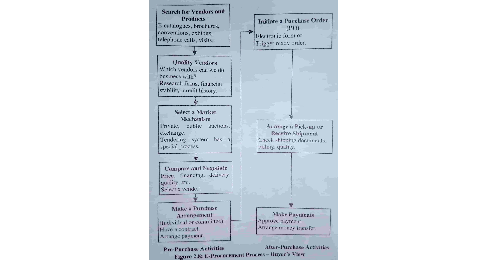
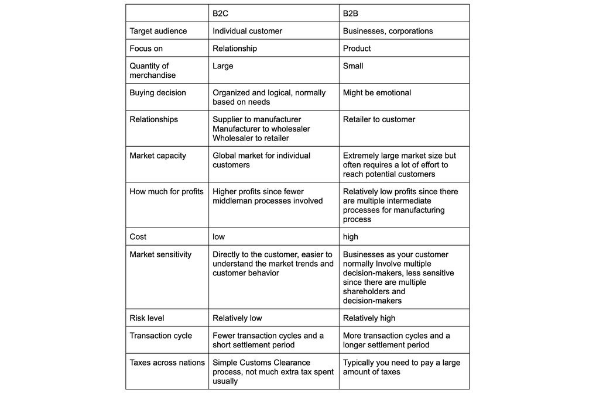
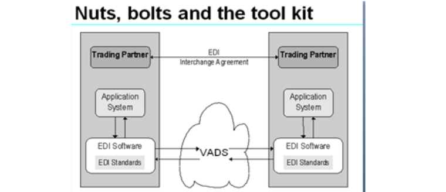
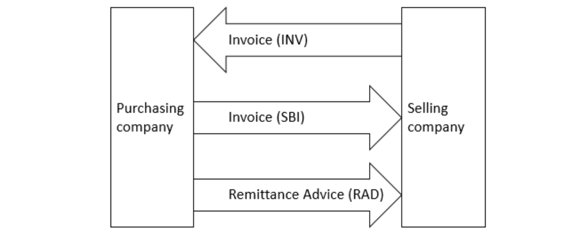
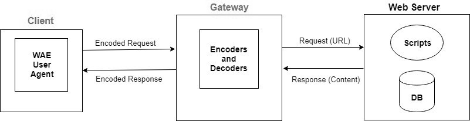

Unit-1: Fundamental Concept of E-Commerce
1.1. Definition of Electronic Commerce
Ecommerce, short for electronic commerce, refers to the online exchange of
goods and services over the internet. It involves online transactions between businesses,
businesses and consumers, as well as between consumers. Ecommerce encompasses a wide range of
activities, including electronic business, online shopping, online marketplaces, electronic
payments, online banking, and online auctions.
Definition: Ecommerce is the trading of goods and services on the
internet, allowing individuals and businesses to buy and sell physical goods, digital goods, and
services electronically.
Ecommerce can occur through various platforms, including websites,
smartphone apps, social media platforms, online marketplaces, and other sales platforms.
Common examples of ecommerce include online shopping, electronic payments,
online auctions, and internet banking.
The goal of ecommerce for a seller is to drive sales using digital platforms
and marketing strategies, while for a buyer, it provides a convenient way to purchase products
and services from anywhere with an internet connection.
1.2. Scope of Electronic Commerce
The scope of electronic commerce (e-commerce) is vast and continually
expanding as technology evolves and consumer behavior changes. Here are some key aspects of the
scope of e-commerce:
- Diverse Business Models: E-commerce encompasses a wide range of business models, including online retail (B2C), business-to-business (B2B) transactions, subscription-based services, digital products, and more. This diversity allows for innovation and adaptation to various industries.
- Global Reach: E-commerce has a global reach, enabling businesses to sell products and services to customers worldwide. This global scope opens up new markets and revenue opportunities for businesses of all sizes.
- Mobile Commerce (M-commerce): With the widespread use of smartphones and mobile apps, the scope of e-commerce extends to mobile commerce. Consumers can shop, make payments, and access services through mobile devices, leading to increased convenience and accessibility.
- Cross-Border E-commerce: The growth of cross-border e-commerce allows businesses to expand internationally without the need for physical presence in foreign markets. This opens up opportunities for businesses to tap into emerging markets.
- Niche Markets: E-commerce allows businesses to target niche markets and cater to specific customer segments. Niche e-commerce stores can thrive by offering specialized products or services.
- Digital Products and Services: Beyond physical goods, e-commerce includes digital products like e-books, software, online courses, streaming services, and more. The scope of e-commerce encompasses the distribution of digital content and services.
- Marketplaces and platforms: E-commerce marketplaces and platforms (e.g., Amazon, eBay, Shopify, WooCommerce) provide businesses with tools to establish and manage their online presence. These platforms offer a wide range of features and integrations to support e-commerce operations.
1.3 Electronic E-commerce and the Trade Cycle
The trade cycle in electronic e-commerce follows a similar pattern to the
traditional trade cycle, but with some key differences.
Sourcing: In electronic e-commerce, sourcing may
involve
the purchase of raw materials or finished products from suppliers located around the
world. This
can be done through online marketplaces or by contacting suppliers directly through
their
websites.
Production: In electronic e-commerce, production
may
involve the assembly of finished products from pre-made components or the creation of
digital
products such as software or e-books.
Distribution: In electronic e-commerce,
distribution
typically involves the shipment of products directly to consumers or to third-party
fulfillment
centers for storage and shipment. This can be done through a variety of shipping
methods,
including postal services, courier services, or specialized delivery companies.
Consumption: In electronic e-commerce, consumption
typically involves the purchase of products through online stores or marketplaces. This
can be
done through a variety of payment methods, including credit cards, PayPal, or other
digital
payment platforms.
1.4 Emergence of Internet and commercial use of Internet
The emergence of the internet is a complex and multifaceted historical
development that spans several decades. It has fundamentally transformed the way we communicate,
access information, conduct business, and interact with the world. Here is a brief overview of
the key milestones and events in the emergence of the internet:
Emergence of Internet
- Origins in ARPANET (1960s): The internet's origins can be traced back to the 1960s when the U.S. Department of Defense's Advanced Research Projects Agency (ARPA, now DARPA) created ARPANET. ARPANET was designed as a decentralized network to facilitate communication between research institutions and government agencies. It used packet-switching technology, a precursor to modern internet protocols.
- Development of TCP/IP (1970s): The Transmission Control Protocol (TCP) and Internet Protocol (IP) were developed in the 1970s by Vinton Cerf and Bob Kahn. TCP/IP became the foundation for how data packets are transmitted and routed across the internet.
- Commercialization and the World Wide Web (1990s): The World Wide Web (WWW) was created by Tim Berners-Lee in 1989, and it became publicly accessible in the early 1990s. This marked the beginning of the internet's transition from a research tool to a global communication and information-sharing platform. The introduction of web browsers later like Mosaic and Netscape Navigator made the internet more user-friendly.
- Dot-com Bubble (late 1990s): The late 1990s saw the rapid growth of internet-based companies, leading to a speculative bubble known as the dot-com bubble. Many internet startups went public, and investors poured money into these companies, even if they were not profitable. The bubble burst in the early 2000s, leading to the collapse of many internet companies.
- Broadband and High-Speed Internet (2000s): The widespread adoption of broadband internet connections in the 2000s greatly improved the internet's speed and accessibility. This allowed for the development of rich media content, online streaming, and more.
- Social Media and Web 2.0 (2000s): The 2000s saw the rise of social media platforms like Facebook, Twitter, and YouTube, which revolutionized how people connect and share information online. This era is often referred to as Web 2.0, emphasizing user-generated content and interactive web experiences.
- Mobile Internet (2000s-2010s): The proliferation of smartphones and mobile devices led to the growth of mobile internet usage. People could access the internet from anywhere, which further transformed how information and services were consumed.
- Cloud Computing (2000s-2010s): The development of cloud computing technologies allowed for scalable and remote data storage, enabling businesses and individuals to access and store data and applications online.
- IoT and the Future (2010s-Present): The Internet of Things (IoT) emerged, connecting everyday objects and devices to the internet. This has the potential to revolutionize various industries, including healthcare, transportation, and manufacturing.
- Rise of E-commerce and Online Services (2010s-Present): Online shopping, streaming services, and remote work became integral parts of modern life, driven by the internet's continued evolution and expansion.
The internet's evolution continues, with ongoing developments in areas such
as artificial intelligence, blockchain technology, and 5G connectivity shaping its future. The
internet has become an indispensable part of our lives, impacting nearly every aspect of society
and the global economy.
Commercialization of Internet
The commercialization of the internet refers to the transformation of the
internet from a government and academic research network into a platform for commerce, business,
and profit-making activities. This process began in the early 1990s and has had a profound
impact on the way businesses operate, how people consume products and services, and the global
economy as a whole. Here are some key aspects and milestones in the commercialization of the
internet:
- Emergence of the World Wide Web (Early 1990s): The World Wide Web, created by Tim Berners-Lee in 1989, played a crucial role in the commercialization of the internet. It provided a user-friendly interface for accessing and sharing information online, making the internet more accessible to the general public.
- Web Browsers: The development and popularization of web browsers like Mosaic and later Netscape Navigator in the mid-1990s made it easier for people to navigate the web. This led to increased web traffic and the creation of online businesses.
- E-commerce: In the mid-1990s, companies like Amazon and eBay emerged as pioneers in online retail and auctions, respectively. They demonstrated the potential for conducting commercial transactions on the internet.
- Digital Advertising: The commercial internet saw the rise of digital advertising as a significant revenue stream. Banner ads, sponsored content, and pay-per-click advertising became common ways for businesses to monetize their online presence.
- Broadband Internet: The widespread adoption of broadband internet in the early 2000s significantly improved internet speeds and enabled more sophisticated online services and multimedia content. This further fueled the growth of e-commerce and online entertainment.
- Social Media: The rise of social media platforms like Facebook, Twitter, and LinkedIn introduced new advertising and marketing opportunities. These platforms allowed businesses to engage with customers and target specific demographics.
- Mobile Commerce (M-commerce): The proliferation of smartphones and mobile devices in the late 2000s and 2010s led to the growth of mobile commerce. Consumers could shop, pay bills, and access services directly from their mobile devices.
- Cloud Computing: Cloud services such as Amazon Web Services (AWS), Microsoft Azure, and Google Cloud Platform revolutionized how businesses host websites, store data, and run applications, making it more cost-effective and scalable.
- Gig Economy and Online Marketplaces: Platforms like Uber, Airbnb, and Upwork exemplify the gig economy, where individuals can offer their services or rent their assets online. These platforms have created new income opportunities and business models.
- Online Streaming and Subscription Services: The internet has transformed the entertainment industry, with the rise of streaming services like Netflix, Spotify, and Disney+. These services have disrupted traditional media and distribution models.
- Global E-commerce and Cross-Border Trade: The internet has facilitated cross-border trade, allowing businesses to reach international markets more easily, leading to the globalization of commerce.
The commercialization of the internet has led to significant economic
growth, innovation, and changes in consumer behavior. It has also raised important questions
about privacy, data security, and the regulation of online businesses, prompting governments and
regulatory bodies to adapt to the evolving digital landscape.
1.5 E-commerce Models
B2C — Business-to-Consumer
Business-to-consumer is a business model in which businesses sell directly
to the consumers who purchase the goods for themselves. No third party, such as a wholesaler, is
involved. A B2C example might look like a clothing company that sells bathing suits to women.
The B2C buyer journey is short and simple. The consumer becomes aware of a need or want, they consider their options, and they make a purchase.
B2C business models may be the easiest to translate into the ecommerce space, and B2C businesses have been many of the first types of businesses to do so. The buyer journey doesn't need to change at all in a digital environment — the last two stages simply happen online rather than in a physical store.
The B2C buyer journey is short and simple. The consumer becomes aware of a need or want, they consider their options, and they make a purchase.
B2C business models may be the easiest to translate into the ecommerce space, and B2C businesses have been many of the first types of businesses to do so. The buyer journey doesn't need to change at all in a digital environment — the last two stages simply happen online rather than in a physical store.
B2B — Business-to-Business
In a B2B model, businesses sell to other businesses — such as SaaS brands
that sell productivity software to other companies. The buyer is an employee (or an entire
department) purchasing a product or service on behalf of their company. Retailers, producers,
and agencies are all examples of B2B companies.
B2B businesses aim to create relationships through a marketing and sales process that is more complicated than most B2Cs'. The B2B sales funnel typically includes awareness, interest, evaluation, engagement, and purchase stages.
B2B businesses aim to create relationships through a marketing and sales process that is more complicated than most B2Cs'. The B2B sales funnel typically includes awareness, interest, evaluation, engagement, and purchase stages.
C2C — Consumer-to-Consumer
C2C transactions don't involve a business at all. Instead, C2C business is
between two consumers, with a third-party company enabling the purchase. Consumers will publicly
share items for sale. Then other consumers can browse the listings or postings, decide what
they'd like to buy, and contact the seller.
While newspaper classifieds could be considered C2C, today this business model is primarily online. Examples of C2C ecommerce include:
While newspaper classifieds could be considered C2C, today this business model is primarily online. Examples of C2C ecommerce include:
- Auction platforms like eBay
- Exchange of services platforms such as dog walking app Rover
- Exchange of goods platforms like Etsy
- Payment platforms such as PayPal
Personal Web Server
A personal web server (PWS) is system of hardware and software that is
designed to create and manage a web server on a desktop computer. It can be used to learn how to
set up and administer a website, and it can also serve as a site for testing dynamic web pages.
One of the main functions of PWS is to provide an environment where web programmers can test
their programs and web pages. Therefore, a PWS supports the more common server-side programming
approaches that can be used with production web servers.
A personal web server, or personal server in short, allows users to store, selectively share, or publish information on the web or on a home network. Unlike other types of web servers, a personal web server is owned or controlled by an individual, and operated for the individual's needs, instead of by a company. It can be implemented in different ways:
A personal web server, or personal server in short, allows users to store, selectively share, or publish information on the web or on a home network. Unlike other types of web servers, a personal web server is owned or controlled by an individual, and operated for the individual's needs, instead of by a company. It can be implemented in different ways:
- as a computer appliance
- as a general-purpose server, such as a Linux server, which may be located at the owner's home or in a data center
- in a shared hosting model, where several users share one physical server by means of virtualization, or virtual hosting.
- as one feature of a computer that is otherwise also used for other purposes.
Internet Information Server
Internet Information Services (IIS) is a web server created by Microsoft for
use with the Windows NT family. In the context of ecommerce, IIS is not a direct component of
ecommerce operations, but rather a technology that can be used to host and manage ecommerce
websites.
IIS is a web server that can be used to host ecommerce websites, allowing customers to access and interact with online stores. IIS is designed to work with Windows operating systems, making it a suitable choice for ecommerce websites built on Microsoft technologies such as ASP.NET or .NET Framework. IIS has a modular architecture, allowing administrators to add or remove modules (extensions) as needed to support specific features or protocols, such as SSL/TLS encryption or HTTP/2. IIS includes various security features, such as firewalls and authentication mechanisms, to help protect ecommerce websites from unauthorized access and malicious activities. IIS can be integrated with ecommerce platforms like Microsoft Dynamics, SharePoint, or custom-built solutions, enabling seamless communication between the web server and ecommerce applications..
IIS is a web server that can be used to host ecommerce websites, allowing customers to access and interact with online stores. IIS is designed to work with Windows operating systems, making it a suitable choice for ecommerce websites built on Microsoft technologies such as ASP.NET or .NET Framework. IIS has a modular architecture, allowing administrators to add or remove modules (extensions) as needed to support specific features or protocols, such as SSL/TLS encryption or HTTP/2. IIS includes various security features, such as firewalls and authentication mechanisms, to help protect ecommerce websites from unauthorized access and malicious activities. IIS can be integrated with ecommerce platforms like Microsoft Dynamics, SharePoint, or custom-built solutions, enabling seamless communication between the web server and ecommerce applications..
ASP Page Contain Scripts
ASP (Active Server Pages) is a technology used to create dynamic web pages.
In the context of e-commerce, ASP pages can contain scripts that enable various features, such
as:
- User authentication and authorization
- Product management and cataloging
- Shopping cart functionality
- Payment processing and integration with payment gateways
- Dynamic content generation and updating
These scripts can be written in languages like Visual Basic Scripting
Edition (VBScript) or C#, and are executed on the server-side to generate the final HTML page
that is sent to the user's browser.
For example, an ASP page might contain a script that retrieves product information from a database, calculates the total cost of items in a shopping cart, or displays a personalized message to the user based on their login status.
For example, an ASP page might contain a script that retrieves product information from a database, calculates the total cost of items in a shopping cart, or displays a personalized message to the user based on their login status.
Contain Objects and Components
Contain objects and components in ecommerce refer to the various elements
and structures that make up an ecommerce website or platform. These objects and components work
together to enable online shopping, processing payments, and managing orders.
Here are some key components mentioned:
Here are some key components mentioned:
- Product Catalog: A digital representation of products or services available for purchase, including product images, descriptions, prices, and other relevant information.
- Shopping Cart: A feature that allows customers to store and manage their selected products for checkout.
- Categories: A hierarchical structure for organizing products, making it easier for customers to find what they're looking for.
- Promotions: Discounts, sales, or special offers that incentivize customers to make a purchase.
- Shipping and Taxes: Components that handle logistics, including calculating shipping costs and taxes.
- Payments and Checkout: Systems for processing payments, including payment gateways and secure checkout processes.
- Place: Geolocation-based components that determine shipping zones, taxes, and other location-specific information.
- Marketing: Components that enable targeted marketing campaigns, such as email marketing, social media integration, and customer segmentation.
Database Access
Database access in ecommerce refers to the ability of an ecommerce platform
or application to interact with a database, storing, retrieving, and managing large amounts of
data related to products, customers, orders, inventory, and other business-critical information.
This access enables the platform to:
- Store and manage product information: Product descriptions, prices, specifications, images, and other details are stored in the database, allowing for easy updates and maintenance.
- Track customer data: Customer information, such as names, addresses, purchase history, and preferences, is stored and analyzed to facilitate personalized marketing, recommendations, and loyalty programs.
- Process transactions: Orders, invoices, and payment information are stored and updated in real-time, ensuring accurate accounting and inventory management.
- Manage inventory and stock levels: The database keeps track of available stock, allowing for automated inventory updates and notifications when items are low or out of stock.
- Enable reporting and analytics: The database provides a foundation for generating reports on sales, customer behavior, and other key performance indicators (KPIs), helping businesses make data-driven decisions.
Types of Database Access
- Relational databases (e.g., MySQL, PostgreSQL): Store data in tables with defined relationships between them, using SQL queries to retrieve and manipulate data.
- NoSQL databases (e.g., MongoDB, Couchbase): Store data in flexible, schema-less structures, using query languages like MongoDB's query language or Couchbase's N1QL.
- Hybrid databases: Combine relational and NoSQL approaches, offering flexibility and scalability.
1.6 Applications of Ecommerce
The following are some of applications of Ecommerce:
- Retail and Wholesale
Ecommerce has numerous applications in this sector. E-retailing is basically a B2C, and in some cases, a B2B sale of goods and services through online stores designed using virtual shopping carts and electronic catalogs. A subset of retail ecommerce is m-commerce, or mobile commerce, wherein a consumer purchases goods and services using their mobile device through the mobile optimized site of the retailer. These retailers use the E-payment method: they accept payment through credit or debit cards, online wallets or internet banking, without printing paper invoices or receipts. - Online Marketing
This refers to the gathering of data about consumer behaviors, preferences, needs, buying patterns and so on. It helps marketing activities like fixing price, negotiating, enhancing product features, and building strong customer relationships as this data can be leveraged to provide customers a tailored and enhanced purchase experience. - Finance
Banks and other financial institutions are using e-commerce to a significant extent. Customers can check account balances, transfer money to other accounts held by them or others, pay bills through internet banking, pay insurance premiums, and so on. Individuals can also carry out trading in stocks online, and get information about stocks to trade in from websites that display news, charts, performance reports and analyst ratings of companies. - Manufacturing
Supply chain operations also use ecommerce; usually, a few companies form a group and create an electronic exchange and facilitate purchase and sale of goods, exchange of market information, back office information like inventory control, and so on. This enables the smooth flow of raw materials and finished products among the member companies and also with other businesses. - Online Booking
This is something almost every one of us has done at some time - book hotels, holidays, airline tickets, travel insurance, etc. These bookings and reservations are made possible through an internet booking engine or IBE. It is used the maximum by aviation, tour operations and hotel industry. - Online Publishing
This refers to the digital publication of books, magazines, catalogues, and developing digital libraries. - Digital Advertising
Online advertising uses the internet to deliver promotional material to consumers; it involves a publisher, and an advertiser. The advertiser provides the ads, and the publisher integrates ads into online content. Often there are creative agencies which create the ad and even help in the placement. Different types of ads include banner ads, social media ads, search engine marketing, retargeting, pop-up ads, and so on. - Auctions
Online auctions bring together numerous people from various geographical locations and enable trading of items at negotiated prices, implemented with e-commerce technologies. It enables more people to participate in auctions. Another example of auction is bidding for seats on an airline website - window seats, and those at the front with more leg room generally get sold at a premium, depending on how much a flyer is willing to pay.
E-Commerce is all around us today, and as an entrepreneur, you should also
get into this realm if you want to expand your markets, get more customers and increase your
profitability.
UNIT-2: Business Models of e-Commerce
2.1 Business to Business E-Commerce
B2B ecommerce (business-to-business electronic commerce) refers to the
online exchange of goods, services or information between businesses or companies.
In this type of ecommerce, the transactions occur between two or more businesses rather than
between a business and individual consumer (B2C ecommerce).
B2B ecommerce involves many activities such as purchasing, selling, marketing, and servicing
products or services exclusively within the business. It can include many different industries
and sectors, including manufacturers, wholesalers, distributors, suppliers and service
providers.
Characteristics of B2B
- Personalizing Customer Experience
One of the defining characteristics of B2B ecommerce is the emphasis on personalized customer experiences. B2B buyers now expect tailored interactions similar to their B2C counterparts. Advanced data analytics and AI technologies enable businesses to gather insights on customer preferences, purchase history, and browsing behavior. Leveraging this data, companies can deliver relevant product recommendations, targeted marketing campaigns, and personalized pricing structures. This personalization not only enhances customer satisfaction but also promotes higher conversion rates and long-term customer loyalty. - Tighter Access Control
Security is a paramount concern in B2B transactions. characteristics of B2B ecommerce platforms are implementing stricter access controls to ensure that only authorized individuals can access sensitive business information and complete transactions. This approach enhances data protection and minimizes the risk of unauthorized access or data breaches. - Multichannel Integration
B2B ecommerce is characterized by the seamless integration of multiple sales channels into a unified customer experience. B2B buyers increasingly engage with businesses across various touchpoints, including websites, mobile apps, social media, and even voice assistants. To meet these diverse expectations, companies are adopting omnichannel strategies that ensure consistent branding, product information, and pricing across all platforms. This integration enhances convenience for customers, allowing them to transition seamlessly between online and offline channels. - Data-Driven Decision Making
Data has become an invaluable asset in shaping B2B eCommerce strategies. Businesses are harnessing the power of data analytics to make informed decisions about inventory management, pricing strategies, demand forecasting, and customer engagement. Advanced analytics tools provide insights into trends, customer behavior, and market fluctuations, enabling businesses to optimize their operations and stay ahead of competitors. The ability to interpret and act on data has become a critical characteristic of B2B eCommerce. - Enhanced security and trust
With the increasing volume of online transactions, security and trust have emerged as vital characteristics of B2B eCommerce. B2B buyers handle sensitive information, including payment details and proprietary business data. To instill confidence, eCommerce platforms are implementing robust cybersecurity measures such as encryption, secure payment gateways, and two-factor authentication. Additionally, transparency in data usage and compliance with privacy regulations contribute to building trust between businesses and their customers. Let's explore advanced security practices and the commitments to trust to enhance B2B ecommerce transactions, ensuring that every interaction is secure and successful. - Potential Global Market
The digital landscape has made it easier for businesses to engage in global trade. The characteristics of B2B eCommerce is embracing the potential of a broader international market. With fewer geographical barriers and improved logistics, businesses can explore new markets, establish international partnerships, and tap into a more extensive customer base. - Basic Models in B2B eCommerce
- Supplier Oriented Marketplace (eDistribution)
In this type of model, there are many buyers and few suppliers. The supplier provides a common marketplace. This market is used by both individual customers as well as businesses. For the success of this model, goodwill in the market and a group of loyal customers is very important. - Buyer Oriented Marketplace (eProcurement)
In this model, there are few buyers and many suppliers. The buyer has his/her own online marketplace. It then invites suppliers and manufacturers to display their products. Buyers search in electronic stores in malls and markets for similar service providing products and compare them. So the buyer company makes it simple by opening a bidding site where a particular product is available from different sellers at different prices. - Intermediary Oriented Marketplace (eExchange)
In this type of model, there are many buyers and many suppliers. An intermediary company runs a marketplace where business buyers and sellers meet and do business with each other.
- Supplier Oriented Marketplace (eDistribution)
Procurement Management Using Buyers Internal marketplace:

2.2 Business to Consumer (B2C)
B2C, or business-to-consumer, is a retail model where products or services
move directly from a business to the end user who has purchased the goods or services for
personal use. It is often contrasted with the business-to-business (B2B) model, which involves
exchanging goods and services between businesses instead of between businesses and consumers.
The B2C Business model applies to any business transaction where the consumer directly receives goods or services, such as small businesses and entrepreneurs, retail stores, restaurants and doctor's offices. B2C most often refers to e-commerce businesses, which use online platforms to connect their products with consumers.
Some B2C businesses use their platforms to market and sell their own products; others connect buyers to sellers, using content traffic to sell advertising spaces or restricting content to paid subscriptions. Popular B2C companies include Amazon, eBay, Meta, Netflix, The New York Times Co. and Uber.
The B2C Business model applies to any business transaction where the consumer directly receives goods or services, such as small businesses and entrepreneurs, retail stores, restaurants and doctor's offices. B2C most often refers to e-commerce businesses, which use online platforms to connect their products with consumers.
Some B2C businesses use their platforms to market and sell their own products; others connect buyers to sellers, using content traffic to sell advertising spaces or restricting content to paid subscriptions. Popular B2C companies include Amazon, eBay, Meta, Netflix, The New York Times Co. and Uber.
2.3 Consumer to Consumer (C2C)
Consumer-to-consumer (C2C) ecommerce is a commerce model in which one
consumer sells his goods or services to other consumers online. It is one of the four pivotal
ecommerce business models, the other three being B2B (business-to-business), C2B
(consumer-to-business), and B2C (business-to-consumer).
Transaction that is made between two customers is led by a third party, basically by online actuation, social media platform, or ecommerce website, that looks after transaction status, payments, and other aspects. It helps sellers as well as buyers to find each other by charging a small fee or commission.
Transaction that is made between two customers is led by a third party, basically by online actuation, social media platform, or ecommerce website, that looks after transaction status, payments, and other aspects. It helps sellers as well as buyers to find each other by charging a small fee or commission.
2.4 Development of B2B e-Commerce (B2C)
B2B eCommerce business can vary depending on the business type, industry,
target market, and other factors. Common stages of building a B2B marketplace include:
- Identification of business needs: The first stage involves identifying the needs of businesses, such as the products or services they require, their buying behavior, and the challenges they face.
- B2B eCommerce website development: Once the business needs are identified, the marketplace platform is developed based on the requirements of the buyers and sellers.
- Recruitment of buyers and sellers: The marketplace needs to attract buyers and sellers to join the platform, which involves marketing and recruitment efforts.
- Onboarding and verification: Once buyers and sellers have signed up, they need to be onboarded and verified to ensure they meet the requirements and standards of the marketplace.
- Transactions and payments: The marketplace facilitates transactions between buyers and sellers and handles payments, which involves setting up payment gateways and ensuring secure transactions.
- Customer service and support: Providing excellent customer service and support is essential for retaining customers and ensuring satisfaction with the marketplace.
2.6 Difference between B2C and B2B e-Commerce

2.7 Just in Time Delivery
Just-in-time delivery means the process of creating goods in a ready state
or completing their production so that a minimal inventory can satisfy demand and delivery can
take place with immediate effect in order that consumers receive what they want precisely when
they want. Just-in-time (JIT) delivery is an inventory and supply chain management strategy
aiming to minimize inventory and increase efficiency. It is a process of delivering goods to
business customers rather than maintaining a large inventory of items that may not be used
immediately.
Just-in-time (JIT) delivery is a strategy that can lower inventory costs and waste for firms, by ordering and receiving items only when necessary. JIT delivery can boost productivity and cut down on lead times, but it necessitates close coordination between departments and with suppliers. By lowering the expense of keeping goods on hand and enabling businesses to make other investments, JIT delivery can increase cash flow. JIT delivery necessitates vigilant demand and inventory management, as well as adaptability to changing conditions.
Just-in-time (JIT) delivery is a strategy that can lower inventory costs and waste for firms, by ordering and receiving items only when necessary. JIT delivery can boost productivity and cut down on lead times, but it necessitates close coordination between departments and with suppliers. By lowering the expense of keeping goods on hand and enabling businesses to make other investments, JIT delivery can increase cash flow. JIT delivery necessitates vigilant demand and inventory management, as well as adaptability to changing conditions.
2.8 Integration with Backend Information
External systems integration is a key feature of the B2B Commerce solution.
In B2B Commerce business logic is enabled for integration and built-in adapters and interfaces
are provided for common integration points. Additionally, the B2B Commerce integration leverages
integration standards by using various IBM connectivity solutions.
B2B Commerce can integrate with:
- Customers by multiple channels
- Back-end systems within the enterprise
- Partners and suppliers
The B2B integration with the backend gives the ability to communicate with
its external environment. This communication includes sending messages to and receiving messages
from back-end systems or external systems, as well as sending notification to customers and
administrators that events occur within B2B Commerce.
2.9 E-marketing in B2B
B2B online marketing, just like regular online marketing, is a form of
marketing in which online resources are used with the aim of promoting products and services.
This involves collecting contact details, generating leads and selling products through online
channels. As 'B2B' already indicates, B2B online marketing is aimed at companies that do
business with companies. This distinction is important, since B2B oriented online marketing
differs from consumer oriented online marketing (B2C). B2B online marketing consists of a wide
range of activities. Which activities all apply is different for each company.
Contents of E-marketing In B2B
B2B content marketing
Content marketing is especially important in the B2B sector. Business
purchases are made less quickly than purchases made by consumers. It often takes a longer period
of time before business purchases are made. Also, there are often more people involved in the
purchase process and the purchases cost on average more money.
B2B SEA
Successful advertising via Google with SEA (search engine advertising) is a
profession itself. Knowledge and skills of Google Adwords are important to get the most out of
it. SEA goes hand in hand with attractive landing pages. Advertising ensures that the traffic to
your website is increased enormously but landing on irrelevant pages has the opposite effect on
your company's reputation.
B2B SEO
When you produce content, it is important to consider search engine
optimization (SEO). Good SEO ensures that you are organically (and for free) at the top of the
search results in Google. And this is important. Research has shown that 60% of visitors click
on position 1-3 in Google, the remaining 40% click on lower positions.
Data driven marketing
Data driven marketing is also very important for B2B online marketing. This
means that online marketing strategies are purely driven by data and not by feeling. Data tells
the facts. This can sometimes (strangely) deviate from feeling but it is actually how your
target group behaves on the website. Data driven marketing is a discipline that can ensure the
successful execution of online marketing activities.
2.10 Electronic Data Interchange (EDI)
Electronic Data Interchange (EDI) is the electronic interchange of business
information using a standardized format. It allows one company to send information to another
company electronically, replacing traditional paper-based methods. Trading partners, businesses
that conduct electronic transactions, agree on specific formats and protocols to ensure seamless
data exchange.
Key Benefits
- Faster Processing: EDI enables automatic data exchange, reducing processing time from days to hours or even minutes.
- Increased Accuracy: Electronic transactions minimize errors caused by manual data entry.
- Improved Security: EDI uses secure protocols to protect sensitive business information.
- Enhanced Interoperability: Standardized formats enable data exchange between different systems and software.
Common EDI Documents
- Purchase Orders (POs)
- Invoices
- Order Status
- Shipping and Receiving
- Test Results
EDI Process
- Buyer creates electronic document: EDI software generates an electronic version of the document, such as a purchase order.
- Transmission: The electronic document is sent automatically to the supplier's system.
- Supplier's system receives and processes: The supplier's order entry system updates immediately upon receipt, and an acknowledgment is transmitted back to confirm receipt.
Standards and Protocols
- EDI uses standardized formats and protocols agreed upon by trading partners, ensuring interoperability between different systems.
- EDI software and third-party vendors create and maintain their own software, providing flexibility and customization options.
2.11 EDI: The Nuts and Bolts, EDI & Business
EDI: The Nuts and Bolts

At the heart of any EDI application is the EDI standard. The essence of EDI
is the coding & structuring of the data into a common & generally accepted format.
Documents sent by means of EDI can fill in as a contribution for accepting an organization's
business application since they are designed by guidelines that specify where certain data ought
to be found, for example, where net aggregate sum ought to show up on a receipt.
These standards also define how individual pieces of information should be represented. For example, in the standards for an electronics industry purchase order, there are specific codes defined to identify the type of product or service being requested, e.g. PN (company part number), BY (buyers part number), VP (vendors part number), PW (part drawing), etc.
These standards also define how individual pieces of information should be represented. For example, in the standards for an electronics industry purchase order, there are specific codes defined to identify the type of product or service being requested, e.g. PN (company part number), BY (buyers part number), VP (vendors part number), PW (part drawing), etc.
EDI & Business

Electronic Data Interchange (EDI) is the electronic interchange of business
information using a standardized format; a process that allows one company to send information
to another company electronically rather than with paper. Business entities conducting business
electronically are called trading partners.
Many business documents can be exchanged using EDI, but the two most common are purchase orders and invoices. At a minimum, EDI replaces the mail preparation and handling associated with traditional business communication.
Many business documents can be exchanged using EDI, but the two most common are purchase orders and invoices. At a minimum, EDI replaces the mail preparation and handling associated with traditional business communication.
2.12 Auctions and Services from Traditional to Internet Based EDI
Traditional EDI (Electronic Data Interchange) allows companies to exchange
business documents like orders and invoices electronically using standardized formats over
dedicated networks called Value-Added Networks (VANs). This method speeds up transactions,
reduces errors, and cuts costs on printing and postage. However, it is expensive to set up and
complex to manage.
Internet-based EDI modernizes this process by using the internet instead of dedicated networks. It still employs standardized document formats but sends them through web-based portals and secure internet protocols like AS2. This approach is cheaper, more accessible for small businesses, integrates better with modern IT systems, and allows real-time data exchange. However, ensuring data security and compatibility between different systems can be challenging.
Traditional auctions require participants to meet in person, place manual bids, and are limited to those who can physically attend. Internet-based auctions, on platforms like eBay, allow global participation with automated bidding and transactions, making the process more accessible and efficient.
Traditional EDI services are primarily used by large companies and include electronic exchange of ordering, invoicing, and shipping documents. Internet-based EDI services offer these same functions but with the added benefits of lower costs, easier adoption by businesses of all sizes, real-time updates, and integration with modern services. This transition enhances customer experience with faster service and accurate information. In summary, the shift from traditional to internet-based EDI has revolutionized business transactions, making them faster, cheaper, and more accessible. It has transformed auctions into a global affair and improved the efficiency and reach of services provided by businesses, facilitating real-time updates and better customer experiences.
Internet-based EDI modernizes this process by using the internet instead of dedicated networks. It still employs standardized document formats but sends them through web-based portals and secure internet protocols like AS2. This approach is cheaper, more accessible for small businesses, integrates better with modern IT systems, and allows real-time data exchange. However, ensuring data security and compatibility between different systems can be challenging.
Traditional auctions require participants to meet in person, place manual bids, and are limited to those who can physically attend. Internet-based auctions, on platforms like eBay, allow global participation with automated bidding and transactions, making the process more accessible and efficient.
Traditional EDI services are primarily used by large companies and include electronic exchange of ordering, invoicing, and shipping documents. Internet-based EDI services offer these same functions but with the added benefits of lower costs, easier adoption by businesses of all sizes, real-time updates, and integration with modern services. This transition enhances customer experience with faster service and accurate information. In summary, the shift from traditional to internet-based EDI has revolutionized business transactions, making them faster, cheaper, and more accessible. It has transformed auctions into a global affair and improved the efficiency and reach of services provided by businesses, facilitating real-time updates and better customer experiences.
UNIT-3: E-Marketing and Advertising Concepts
3.1 Define E-marketing
E-marketing refers to those strategies and methods which utilize online ways
to reach the target and potential customers. Millions of Internet users access various websites
using different tools like computers, laptops, tablets, and smart or android phone devices. The
number of internet users is increasing day by day. So, every business appears to be hopping on
the internet marketing. The internet is the most effective tool for any business with market
leaders. There are many accessible and economical ways on the internet to boost your business.
Importance Of E-marketing
- Global Reach
E-marketing enables businesses to reach a global audience without geographical boundaries. - Cost-Effective
Digital marketing is typically much cheaper than traditional marketing methods (like TV, radio, or print ads). - Targeted Advertising
E-marketing allows businesses to target specific audiences based on demographics, interests, and behavior. - Measurable Results
One of the key advantages of e-marketing is the ability to track performance in real time. Businesses can use analytics tools to measure the success of campaigns, such as website traffic, click-through rates, conversion rates, and ROI (Return on Investment), and adjust strategies based on data. - Customer Engagement
E-marketing offers multiple channels (social media, email, websites) where businesses can interact directly with customers. This engagement fosters brand loyalty, provides customer feedback, and enhances customer service. - Personalization
With digital marketing, businesses can create personalized content for different segments of their audience. For example, personalized email offers or retargeting ads based on user behavior can lead to higher engagement and conversion rates. - 24/7 Availability
E-marketing platforms operate around the clock, allowing businesses to market their products and services even when they are not actively working. Customers can access information, make inquiries, or purchase products at any time. - Fast and Flexible
E-marketing enables businesses to quickly launch, modify, or stop campaigns in response to changing market conditions, competitor actions, or customer behavior. This flexibility helps companies stay agile and responsive. - Higher Conversion Rates
With targeted and personalized marketing, businesses can focus on audiences who are more likely to make purchases. E-marketing strategies like retargeting ads or email reminders can help boost conversions. - Improved Customer Insights
Through data collected from digital marketing tools, businesses can gain deeper insights into customer behavior, preferences, and needs. This data allows for better decision-making and more effective marketing strategies. - Brand Awareness and Credibility
E-marketing helps build brand awareness and credibility through consistent online presence, content marketing, and positive customer interactions. Social proof, like customer reviews and testimonials, further enhances brand reputation. -
Features Of E-marketing
Many small or big businesses are using e-marketing because of its different
features and numerous benefits. Some of the essential features are as follows:
E-marketing Is Cheap Than Traditional Marketing
Comparing its cost with traditional marketing media such as newspaper ads and billboards is much
more reasonable and efficient. You can reach a wide range of audiences with minimal resources.
- Tangible ROI
Small business owners can now check the turnover rate with the help of Keap. It explores numerous things like views of videos, the number of emails opened, and per click on the link. Most importantly, it notifies us of how much sales the business has made due to e-marketing. - 24/7 Approach
It works 24 hours a day, seven days a week, and 365 days a year. Whether you're homesick, sleeping, or attending casual meetings, it doesn't matter, but e-marketing is always hard at work. - Eliminate Follow-up Failure
Elimination of follow-up-failure is the main secrete behind the success of the small business. It is done by entering your business figures into the Keap. Then its automatic marketing system will provide custom-tailored details about your business, which areas to enhance, and what product to quit.
Advantages Of E-marketing
Following are the important advantages of emarketing:
- Fast Response
The response rate of internet marketing is fast; for example, you upload something, and it goes viral. Then it would reach millions of people overnight. - Cost-Efficient
Compared to the other media of advertising, it is more reasonable. If you're using unpaid methods, then there is almost zero cost. - Less Risky
What does one have to lose when your cost is zero, and the instant rate is high? No risk at all. Greater Data Collection. In this way, you have a remarkable ability to manage a broad range of data about your customers. You can use these customer details later. - Interactive
One of the essential elements of digital marketing is that it's very interactive. People can leave their comments, and you'll get feedback from your target market.
3.2 Traditional marketing
Traditional marketing refers to all of the marketing techniques that
predate what we now call digital marketing. Traditional marketing is any form of marketing that
uses offline media to reach an audience. Basic examples of traditional marketing include things
like newspaper ads and other print ads, but there are also billboards, mail advertisements, and
TV and radio advertisements. Some of the common traditional marketing channels are billboards ,
handouts , direct mail , printing ads , event marketing , referral , broadcasting and cold
calling.
Traditional marketing advantages
Despite the fact that some forms of traditional marketing have existed for
centuries, there are still benefits to integrating traditional marketing into your modern
strategy.
- Harder to Ignore: Traditional marketing methods, such as TV ads, billboards, and outdoor displays, can surround your prospect with your brand, value proposition, message, and products, creating a mass effect and impact.
- DIY Options: Many traditional channels, including direct mail, events, and personal contact, are easy for your marketing team to execute themselves without the additional cost of an external partner or agency.
- Less Potential Risk: Offline marketing allows for more control over your brand and message, as well as how it is displayed. This can be particularly important for certain audiences, such as high-value clients and deals.
- Better at Reaching Certain Audiences: Certain key banking customers continue to use traditional media as a primary source of information. For example, CD campaigns do well in local newspapers.
- Targeted Offers: Direct mail is still the best way to deliver specific offers to specific people. This advantage is especially strong when targeting existing or former customers.
- Increased Awareness: Traditional marketing methods, such as print advertising and billboards, can increase brand awareness and leave a longer impression on your audience.
- Sustainable: Traditional marketing methods can be more sustainable and less demanding than digital marketing, which requires ongoing streams of promotional material.
- Establishing Personal Connection: Traditional methods, such as sending birthday cards with special offers through direct mail, allow your brand to establish a personal connection with customers, which can lead to increased loyalty and engagement.
- Cost-Effective: Traditional marketing methods, such as newspapers and radio ads, can be more cost-effective than digital marketing, especially for small businesses.
- Reusable Advertisements: Printed materials, such as flyers and brochures, can be reused and re-read, making them a valuable asset for businesses.
- New Audience Reach: Traditional marketing methods, such as TV and radio ads, can help reach a new audience and demographics, supplementing online marketing efforts.
Drawbacks of traditional marketing
Traditional marketing may have its benefits, but that doesn't mean there
aren't any negatives. There are several reasons why digital marketing has become a major
competitor of traditional marketing, and weighing the pros and cons of each type of marketing
can help you decide on the right strategy for your business.
- Limited flexibility: Traditional marketing methods, such as print ads and TV commercials, require a significant lead time for production and placement, making it difficult to respond quickly to changes in the marketplace.
- Difficulty in gathering data: It's challenging to measure the effectiveness of traditional marketing campaigns, making it hard to determine return on investment (ROI). For example, it's difficult to track the number of people who saw a poster or mailer.
- High costs: Traditional marketing methods, such as TV ads, can be expensive, with production costs ranging from $15,000 to $50,000 and placement costs adding tens of thousands more.
- Cluttered and competitive environments: Print media, such as newspapers, can be cluttered with hundreds of ads, making it difficult to stand out. Similarly, TV ads may be lost in a crowded broadcast schedule.
- Limited targeting: Traditional marketing methods often struggle to target specific customers or market segments, making it difficult to reach the desired audience.
- Update limitations: Traditional marketing campaigns often require a significant amount of time and resources to update or edit, making it difficult to respond quickly to changes in the market or product offerings.
- Negative feedback visibility: In traditional marketing, negative feedback or complaints from customers may not be easily visible or shareable, whereas online digital marketing platforms can amplify negative feedback quickly.
Online Marketing
Online marketing, also known as digital marketing, is the practice of
leveraging web-based channels to spread a message about a company's brand, products, or services
to its potential customers. The methods and techniques used for online marketing include email
campaigns, social media, advertising, search engine optimization (SEO) and more. The objective
of marketing is to reach potential customers through the channels where they already spend their
time reading, searching, shopping and socializing online. In short, go where the customers is.
Benefits of online marketing
- Global Reach
With online marketing, businesses can reach a global audience, eliminating geographical limitations. This enables even small companies to expand their customer base internationally. - Cost-Effective
Online marketing is generally more affordable than traditional marketing methods like TV, print, or radio ads. Tools like social media, content marketing, and email marketing are budget-friendly and accessible to businesses of all sizes. - Targeted Audience
One of the major benefits of online marketing is the ability to target specific audiences based on demographics, interests, behavior, and location. Tools like Google Ads or social media platforms allow for precise audience targeting. - Measurable Results
Online marketing provides detailed metrics such as website traffic, conversion rates, click-through rates, and ROI. This data allows businesses to track the performance of their campaigns and make data-driven adjustments. - Personalization
Online marketing allows for highly personalized campaigns. Businesses can create personalized content or offers based on individual user behavior, preferences, and previous interactions, increasing customer satisfaction and conversion rates.
3.3 Online Marketing vs offline Marketing
| S.No. | Online marketing | Offline marketing |
|---|---|---|
| 1. | Online marketing is generally focus on content. | Offline marketing is generally focus on product. |
| 2. | Online marketing includes third party like media, web content, search e-mail, social media. | Offline marketing includes mass media, phone center, telephone. |
| 3. | Online marketing communicates customers with e-mails, chat, social media. | Offline marketing communicates with customer with their mobile number and staff. |
| 4. | Target audience met at one place. | Target audience is scattered. |
| 5. | It is cost effective. | It is high marketing cost. |
| 6. | It helps in directly reaches out to the professionals of the industry and market. | It does not directly reach out to the professionals due to some barriers. |
| 7. | Prospective buyer cannot visible. | It directly visible to their prospective buyer. |
| 8. | Less people to manage. | Large people to manage. |
3.4 Tools for Online Marketing and offline Marketing
In eCommerce, online and offline marketing tools are essential for reaching
and engaging customers. Online marketing tools include social media platforms like Facebook and
Instagram for advertising and engagement, email marketing services like Mailchimp for
newsletters and promotions, and SEO tools like Google Analytics for improving search engine
rankings. PPC advertising on platforms like Google Ads drives traffic through paid ads, while
content marketing tools like WordPress help create valuable content. Affiliate marketing uses
platforms like ShareASale to partner with affiliates, and influencer marketing tools like
Upfluence help collaborate with influencers. Video marketing on YouTube and Vimeo engages
customers through visual content.
Offline marketing tools include print advertising in newspapers and magazines, direct mail for personalized marketing, and trade shows for networking and lead generation. Radio and TV advertising offer broad reach and brand recognition, while outdoor advertising like billboards targets commuters. Telemarketing involves direct interaction with customers through call centers, and sponsorships build brand association by supporting events and teams. Networking through business cards and events helps build relationships and generate leads. Integrating online and offline tools maximizes marketing effectiveness. For instance, QR codes on print ads can direct customers to a website, while promoting offline events through social media and email marketing can boost attendance. Consistent branding across all channels ensures a cohesive brand image, reaching the audience wherever they are. This comprehensive approach leverages the strengths of both online and offline strategies for optimal marketing results.
Offline marketing tools include print advertising in newspapers and magazines, direct mail for personalized marketing, and trade shows for networking and lead generation. Radio and TV advertising offer broad reach and brand recognition, while outdoor advertising like billboards targets commuters. Telemarketing involves direct interaction with customers through call centers, and sponsorships build brand association by supporting events and teams. Networking through business cards and events helps build relationships and generate leads. Integrating online and offline tools maximizes marketing effectiveness. For instance, QR codes on print ads can direct customers to a website, while promoting offline events through social media and email marketing can boost attendance. Consistent branding across all channels ensures a cohesive brand image, reaching the audience wherever they are. This comprehensive approach leverages the strengths of both online and offline strategies for optimal marketing results.
3.5 Issues with Online Marketing
Online marketing, while offering numerous opportunities, also presents
several challenges and issues. These can vary based on industry, target audience, and marketing
strategies employed. Here are some common issues:
- Privacy Concerns
- Data Collection: Online marketing often relies on collecting and analyzing user data, which can raise privacy issues and concerns about data security.
- Regulations: Compliance with regulations like GDPR in Europe and CCPA in California is mandatory but can be complex and challenging to manage.
- Ad Fraud
- Click Fraud: Automated systems or individuals generate fake clicks on ads, leading to wasted advertising budgets.
- Impression Fraud: Fake impressions can also lead to skewed metrics and reduced campaign effectiveness.
- Ad Blockers
- Reduced Reach: Increasing use of ad blockers by consumers can reduce the reach and effectiveness of online ads.
- Revenue Impact: Publishers and marketers lose potential revenue due to ads being blocked.
- Increasing Competition
- Market Saturation: As more businesses turn to online marketing, competition for attention and keywords increases.
- Rising Costs: Higher competition often leads to increased costs for pay-per-click (PPC) and other paid advertising strategies.
- Algorithm Changes
- Search Engines: Frequent changes in search engine algorithms can impact SEO strategies and organic traffic.
- Social Media Platforms: Algorithm changes on social media can affect the visibility and engagement of content.
- Content Overload
- Consumer Fatigue: With the massive amount of content available online, consumers can become overwhelmed and less responsive to marketing efforts.
- Quality vs. Quantity: Striking the right balance between producing high-quality content and maintaining a steady output can be challenging.
- Measuring ROI
- Attribution Models: Determining the effectiveness of various marketing channels and accurately attributing conversions can be complex.
- Long Sales Cycles: For some industries, long sales cycles can make it difficult to track and measure the return on investment (ROI) of marketing efforts.
3.6 Model of an Online Video Store
An online video store model involves various components to create a platform
for users to browse, select, and watch videos. Here's an outline of its key components:
- User Interface
- Homepage: Displays featured movies, categories, promotions, and recommendations.
- Search and Filters: Allows users to search for movies by title, genre, actor, release date, or rating.
- User Profiles: Enables users to create accounts, manage preferences, view watch history, and save favorites.
- Payment and Subscription: Integration for payment gateways, subscription models, and rental/purchase options.
- Content Management
- Movie Catalog: Contains a vast collection of movies with metadata (title, description, genre, cast, ratings, etc.).
- Licensing and Rights Management: Ensures legal access to content through licenses and agreements.
- Content Delivery: Uses streaming servers or content delivery networks (CDNs) for smooth playback.
- Recommendation System
- Personalized Recommendations: Utilizes user data, viewing history, and preferences to suggest relevant movies.
- Algorithms: Implement machine learning algorithms to improve recommendation accuracy over time.
- Admin Dashboard
- Content Management: Allows administrators to add, remove, or edit movie details, manage licenses, and update availability.
- User Management: Monitors user activity, manages accounts, resolves issues, and oversees subscriptions.
- Playback and Streaming
- Video Player: Supports high-quality streaming, subtitles, multiple resolutions, and adaptive bitrate streaming for various devices.
- Offline Viewing: Optional feature allowing users to download movies for offline watching.
- Security and DRM (Digital Rights Management)
- Encryption: Ensures secure transmission of content.
- DRM Solutions: Protects content from unauthorized access or piracy.
UNIT-4: Mobile and Wireless Application
4.1 Define Mobile and wireless
Mobile commerce, also known as m-commerce, involves using wireless
handheld devices like cell phones and tablets to conduct commercial transactions online,
including the purchase and sale of products, online banking, and paying bills.
Mobile commerce is a large subset of electronic commerce, a model where firms or individuals
conduct business over the Internet. As of 2023, nearly 97% of Americans own a cell phone, and
85% of them owned a smartphone. This is up from 35% in 2011.Many products and services can be
transacted via m-commerce, including banking, investing, and purchases of books, plane tickets,
and digital music. The rapid growth of mobile commerce has been driven by several factors,
including increased wireless handheld device computing power, a proliferation of m-commerce
applications, and the resolution of security issues.
4.2 Growth of M-commerce
Ecommerce has been on the rise massively in recent years, but it may not be
the next true frontier for shopping as M-commerce continues to become more popular. And
M-commerce is poised to burst into the mainstream thanks to a host of technological advances
that are making it easier for users to shop on their phones. Below, we've outlined the road
ahead for M-commerce growth and detailed some mobile shopping statistics.
In 2023, e-commerce growth as a digital category is being driven largely by mobile commerce. In fact, eMarketer estimates (via Statista) that in 2024, mobile will make up about 73% of all e-commerce sales; as recently as 2016, it represented 52.4%. This means that almost three out of every four dollars spent on online purchases are coming from mobile, and that rate is accelerating.Globally, according to eMarketer, mobile commerce sales will be upwards of $3.5 trillion in 2021, and there are no signs of that growth slowing down anytime soon.
In 2023, e-commerce growth as a digital category is being driven largely by mobile commerce. In fact, eMarketer estimates (via Statista) that in 2024, mobile will make up about 73% of all e-commerce sales; as recently as 2016, it represented 52.4%. This means that almost three out of every four dollars spent on online purchases are coming from mobile, and that rate is accelerating.Globally, according to eMarketer, mobile commerce sales will be upwards of $3.5 trillion in 2021, and there are no signs of that growth slowing down anytime soon.
4.3 Wireless Application Protocol (WAP)
WAP stands for Wireless Application Protocol. It is a protocol designed for
micro-browsers and it enables access to the internet in mobile devices. It uses the markup
language WML (Wireless Markup Language and not HTML), WML is defined as an XML (Extended Markup
Language) 1.0 application. It enables the creation of web applications for mobile devices. In
1998, WAP Forum was founded by Ericson, Motorola, Nokia and Unwired Planet whose aim was to
standardize the various wireless technologies via protocols. WAP protocol resulted from the
joint efforts of the various members of WAP Forum.
WAP model

The user opens the mini-browser in a mobile device. He selects a website
that he wants to view. The mobile device sends the URL encoded request via network to a WAP
gateway using WAP protocol.
The WAP gateway translates this WAP request into a conventional HTTP URL request and sends it
over the internet. The request reaches to a specified web server and it processes the request
just as it would have processed any other request and sends the response back to the mobile
device through WAP gateway in WML file which can be seen in the micro-browser.
4.4 Use of Technologies for mobile commerce
Mobile commerce (m-commerce) leverages various technologies to facilitate
seamless transactions and enhance customer experiences. Some key technologies used in m-commerce
include:
- Augmented Reality (AR): Enables customers to virtually try products, visualize furniture in their space, or see how glasses or eyeshadow would look on them.
- Artificial Intelligence (AI): Provides personalized recommendations, predicts customer behavior, and offers real-time data analysis for optimized marketing and sales strategies.
- Near-Field Communication (NFC): Enables contactless payments, such as Apple Pay, Google Pay, and Samsung Pay, allowing customers to make in-store purchases without swiping cards.
- Location-Based Services (LBS): Tracks customers' locations using GPS and Wi-Fi, enabling targeted advertising, location-specific content, and personalized recommendations.
- Mobile Wallets: Digital wallets like Apple Pay, Google Pay, and Samsung Pay store payment information, making transactions faster and more secure.
- Short Message Service (SMS): Used for simple notifications, such as payment due or fraud alerts, although its effectiveness may vary depending on the device and user behavior.
- Multimedia Messaging Service (MMS)
- WiMax
- Radio-Frequency Identification (RFID)
- Mobile Application Programming Interfaces (APIs)
4.5 Architecture of WAP
- Application Layer: This layer contains the Wireless Application Environment (WAE). It contains mobile device specifications and content development programming languages like WML.
- Session Layer: This layer contains Wireless Session Protocol (WSP). It provides fast connection, suspension and reconnection.
- Transaction Layer: This layer contains Wireless Transaction Protocol (WTP). It runs on top of UDP (User Datagram Protocol) and is a part of TCP/IP and offers transaction support.
- Security Layer: This layer contains Wireless Transport Layer Security (WTLS). It offers data integrity, privacy and authentication.
- Transport Layer: This layer contains Wireless Datagram Protocol. It presents consistent data format to higher layers of WAP protocol stack.
4.6 Generations in Wireless Communications
We have made very huge improvements in wireless communication and have
expanded the capabilities of our wireless communication system. We all have seen various
generations in our life. Let's discuss them one by one.
0th Generation
Pre-cell phone mobile telephony technology, such as radio telephones some
had in cars before the arrival of cell phones. Communication was possible through voice only.
These mobile telephones were usually mounted in cars or trucks.
1G (1st Generation)
First-time calling was introduced in mobile systems.
- It used analog signals.
- It used an FDD scheme and typically allocated a bandwidth of 25 Mhz.
- The coverage area was small.
- No roaming support between various operators.
- Low sound quality.
- Speed:- 2.4 kbps.
2G (2nd Generation)
- Shifted from analog to digital.
- It supported voice and SMS both.
- Supported all 4 sectors of the wireless industry namely Digital cellular, Mobile Data, PCS, WLAN.
- Moderate mobile data service.
- 2G WLAN provided a high data rate & large area coverage.
- Speed:- 64 kbps.
5G came after 2G which used the concept of GPRS. Streaming was also
introduced and mail services too. Then came 2.75G or EDGE which was faster in providing services
than 2.5G. It gave faster internet speed up to 128kbps and also used edge connection.
3G (3rd Generation)
- The Internet system was improved.
- Better system and capacity.
- Offers high-speed wireless internet.
- The connection used was UMTS and WCMA.
- Speed:- 2mbps.
4G (4th Generation)
- IP-based protocols.
- LTE (Long term evaluation) was mainly for the internet.
- Vo-LTE (Voice over LTE) is for both voice and the internet.
- Freedom and flexibility to select any desired service with reasonable QoS.
- High usability.
- Supports multimedia service at a low transmission cost.
- HD Quality Streaming.
- Speed:-100mbps.
5G (5th Generation)
It is yet to come in many countries but here are some notable points about
5G.
- Higher data rates.
- Connectivity will be more fast and more secure.
- Data Latency will be reduced to a great level.
- Massive network capacity.
- It is 30 times faster than 4G.
- There would be more flexibility in the network.
4.7 Security Issues related to wireless communications
- Unauthorized Access: The proliferation of wireless devices creates more potential entry points for attackers to gain unauthorized access to a network, putting sensitive data and resources at risk.
- Rogue Access Points: Unsecured public access points can allow malicious actors to intercept sensitive information, such as passwords or credit card numbers, by using sniffing tools.
- Eavesdropping: Wireless networks are vulnerable to unlawful interception and eavesdropping due to the lack of a physical barrier, making it possible for unauthorized third parties to intercept data being transmitted over the network.
- Jamming: Wireless networks can be disrupted by intentional jamming, which can cause denial-of-service (DoS) attacks or prevent legitimate devices from communicating.
- Spoofing: Malicious actors can spoof wireless network IDs (SSID) or MAC addresses to gain unauthorized access or disrupt network operations.
- Denial-of-Service (DoS): Sending large amounts of traffic (or viruses) over the network can hijack resources or introduce backdoors, causing network disruptions or outages.
- Weak Encryption: Outdated or poorly configured encryption protocols, such as WEP, can be easily exploited by attackers, compromising network security.
- Inadequate Configuration: WLAN equipment often comes with security measures switched off entirely, leaving networks vulnerable if not properly configured.
- Internet of Things (IoT) Exploitation: The increasing number of IoT devices connected to wireless networks creates new opportunities for exploitation, allowing malicious actors to collect personal information, steal identities, or compromise financial data.
- Lack of Physical Barrier: Wireless networks transmit and receive data using radio waves, making them vulnerable to interception and eavesdropping, as there is no physical barrier to prevent unauthorized access.
UNIT-5: Network Infrastructure for E-commerce
Network infrastructure refers to the hardware and software that
enable network connectivity and communication between users, devices, apps, the internet, and
more.
5.1 Network and internets
Computer networking refers to interconnected computing devices that can
exchange data and share resources with each other. These networked devices use a system of
rules, called communications protocols, to transmit information over physical or wireless
technologies. Computer networks were first created in the late 1950s for use in the military and
defense. They were initially used to transmit data over telephone lines and had limited
commercial and scientific applications. With the advent of internet technologies, a computer
network has become indispensable for enterprises.
Internet, a system architecture that has revolutionized mass communication, mass media, and commerce by allowing various computer networks around the world to interconnect. Sometimes referred to as a “network of networks,” the Internet emerged in the United States in the 1970s but did not become visible to the general public until the early 1990s. By 2020, approximately 4.5 billion people, or more than half of the world's population, were estimated to have access to the Internet. And that number is growing, largely due to the prevalence of “smart” technology and the "Internet of Things," where computer-like devices connect with the Internet or interact via wireless networks. These “things” include smartphones, appliances, thermostats, lighting systems, irrigation systems, security cameras. vehicles, even cities.
The Internet provides a capability so powerful and general that it can be used for almost any purpose that depends on information, and it is accessible by every individual who connects to one of its constituent networks. It supports human communication via social media, electronic mail (e-mail), “chat rooms,” newsgroups, and audio and video transmission and allows people to work collaboratively at many different locations. It supports access to digital information by many applications, including the World Wide Web. The Internet has proved to be a spawning ground for a large and growing number of “e-businesses” (including subsidiaries of traditional “brick-and-mortar” companies) that carry out most of their sales and services over the Internet.
Internet, a system architecture that has revolutionized mass communication, mass media, and commerce by allowing various computer networks around the world to interconnect. Sometimes referred to as a “network of networks,” the Internet emerged in the United States in the 1970s but did not become visible to the general public until the early 1990s. By 2020, approximately 4.5 billion people, or more than half of the world's population, were estimated to have access to the Internet. And that number is growing, largely due to the prevalence of “smart” technology and the "Internet of Things," where computer-like devices connect with the Internet or interact via wireless networks. These “things” include smartphones, appliances, thermostats, lighting systems, irrigation systems, security cameras. vehicles, even cities.
The Internet provides a capability so powerful and general that it can be used for almost any purpose that depends on information, and it is accessible by every individual who connects to one of its constituent networks. It supports human communication via social media, electronic mail (e-mail), “chat rooms,” newsgroups, and audio and video transmission and allows people to work collaboratively at many different locations. It supports access to digital information by many applications, including the World Wide Web. The Internet has proved to be a spawning ground for a large and growing number of “e-businesses” (including subsidiaries of traditional “brick-and-mortar” companies) that carry out most of their sales and services over the Internet.
5.2 Network Routers
The router is a physical or virtual internetworking device that is designed
to receive, analyze, and forward data packets between computer networks. A router examines a
destination IP address of a given data packet, and it uses the headers and forwarding tables to
decide the best way to transfer the packets. There are some popular companies that develop
routers; such are Cisco, 3Com, HP, Juniper, D-Link, Nortel, etc. Some important points of
routers are given below:
- A router is used in LAN (Local Area Network) and WAN (Wide Area Network) environments.
- It shares information with other routers in networking.
- It uses the routing protocol to transfer the data across a network.
- Furthermore, it is more expensive than other networking devices like switches and hubs.
A router works on the third layer of the OSI model, and it is based on the
IP address of a computer. It uses protocols such as ICMP to communicate between two or more
networks. It is also known as an intelligent device as it can calculate the best route to pass
the network packets from source to the destination automatically.
Network Routers
- Broadband Routers
Broadband routers are versatile little gadgets that can do a whole lot. They can connect our computer to the internet and are also great for connecting our devices. - Wireless Routers
A wireless router is a magical little device that serves as the heart of your local area network, allowing your devices to communicate with each other and the outside world. It's similar to a wired router but with one key difference: it uses radio signals instead of wires, making it the perfect choice for those who prefer a clutter-free environment. - Edge Routers
Imagine you're standing at the edge of the ISP network, and there you find the powerful edge router. This router is like a doorman, responsible for communicating with external networks using protocols like BGP (Border Gateway Protocol). It bridges the network's backbone and core routers, connecting ISPs or large organizations. Whether wired or wireless, this router has a specific task: distributing internet data packets between networks. But remember, it won't handle the distribution of data packets within networks. - Core Routers
Think of routers as a well-organized hierarchy, with the powerful core router at the top. These bad boys can cost as much as a luxury sports car, but they're worth every penny, processing millions of packets every second. They're often nestled in the center of massive networks, passing packets on to their lesser counterparts, like edge routers. Ideally, a core router is an essential component of large computer networks, often relying on lesser routers for connectivity. It communicates with other routers in the network, such as edge routers, to transfer packets to other networks. The Border Gateway Protocol (BGP) allows routers to share information about the best routes to take or network destinations that have become unreachable. - Virtual Routers
They're great routers because they can be helpful in certain situations. A virtual router is a software-based routing framework that allows a computer or server to perform a typical hardware router's network and packet routing functions. It's like turning your computer into a router.
5.3 Internet Protocol Suite
Internet Protocol suite (IP suite) is the standard network model and
communication protocol stack used on the Internet and on most other computer networks. While
other networking models exist, the IP suite is overwhelmingly the global standard for
computer-to-computer communication.
The IP suite follows a client/server model, in which multiple client programs share the services of a common server program. Protocols in the suite define end-to-end data handling methods for everything from packetizing, addressing and routing to receiving. Broken down into layers the IPS includes the link layer, the internet layer, the transport layer, application layer and the physical layer. Each layer contains a number of protocols for communications. The suite is sometimes just called TCP/IP, because those are the predominant protocols in the model and were the first ones used. However, the IP suite involves many other protocols.
The following is a partial list of protocols in each layer:
The IP suite follows a client/server model, in which multiple client programs share the services of a common server program. Protocols in the suite define end-to-end data handling methods for everything from packetizing, addressing and routing to receiving. Broken down into layers the IPS includes the link layer, the internet layer, the transport layer, application layer and the physical layer. Each layer contains a number of protocols for communications. The suite is sometimes just called TCP/IP, because those are the predominant protocols in the model and were the first ones used. However, the IP suite involves many other protocols.
The following is a partial list of protocols in each layer:
Application layer
BGP, DHCP, DNS, FTP, HTTP, IMAP, LDAP, MGCP, NNTP, NTP, POP,
ONC/RPC, RTP, RTSP, RIP, SIP, SMTP, SNMP, SSH, Telnet, TLS/SSL and XMPP.
Transport layer
TCP, UDP, DCCP, SCTP and RSVP.
Internet layer
IP, IPv4, IPv6, ICMP, ICMPv6, ECN, IGMP and IPsec.
Data link layer
ARP, NDP, OSPF, L2TP, PPP, MAC, Ethernet, DSL, ISDN and
FDDI.
The United States Department of Defense (DoD) developed the Internet
protocol suite from research at DARPA (Defense Advanced Research Projects Agency). For this
reason, the model is also sometimes referred to as the DoD model.
5.4 Internet Naming Conventions
The naming convention is a systematic method for allocating names to
things. Internet naming conventions refer to the rules, standards, or guidelines used to name
various entities and elements across the internet. These conventions are established to bring
order, consistency, and clarity to the way things are named and identified online.
URLs
A Uniform Resource Locator (URL), colloquially known as an address on the
Web, is a reference to a resource that specifies its location on a computer network and a
mechanism for retrieving it. A URL is a specific type of Uniform Resource Identifier (URI),
although many people use the two terms interchangeably. URLs occur most commonly to reference
web pages (HTTP/HTTPS) but are also used for file transfer (FTP), email (mailto), database
access (JDBC), and many other applications.
A URL is an address that specifies the location of a resource on the internet. It consists of a
protocol (like HTTP or HTTPS), a domain name (such as www.example.com), and often includes a
path to a specific page or resource on the server.
Absolutely! Here's a concise explanation of each concept related to Internet Naming Conventions:
TCP (Transmission Control Protocol)
TCP is a fundamental communication protocol that enables data to be
reliably transmitted between devices on the internet. It breaks data into packets, ensures
they're correctly sent and reassembled at the destination, providing a stable and ordered
communication channel.
FTP (File Transfer Protocol)
FTP is a protocol used for transferring files between a client and a server
on a network. It allows users to upload, download, and manage files securely between computers
over the internet.
Telnet
Telnet is a network protocol used to establish a remote connection to
another device, typically a server or computer. It allows users to access a command-line
interface on a remote system and execute commands as if they were directly working on that
system.
Search Engine
A search engine is an online tool that allows users to search for
information on the internet using keywords or phrases. Examples include Google, Bing, and Yahoo.
Search engines crawl the web, index content, and provide users with relevant results based on
their queries.
5.5 Broadband Technologies
Broadband technologies play a crucial role in supporting and enhancing the
operations of an e-commerce business. These technologies provide the necessary infrastructure
for reliable and high-speed internet connectivity, ensuring seamless online transactions, data
transfer, and customer interactions. Here are some broadband technologies commonly used in
handling an e-commerce business:
- DSL (Digital Subscriber Line)
DSL uses existing telephone lines to deliver high-speed internet access. It's widely available and offers relatively fast download speeds, making it suitable for small to medium-sized e-commerce operations. - Cable Internet
Cable internet utilizes cable television lines to deliver internet connectivity. It offers higher speeds compared to DSL and is suitable for handling moderate to heavy online traffic in e-commerce businesses. - Fiber Optic Internet
Fiber optic technology transmits data using light through fiber optic cables. It provides incredibly high speeds and reliability, making it ideal for large-scale e-commerce businesses that require substantial bandwidth for data-intensive operations. - Fixed Wireless
Fixed wireless technology uses radio signals to provide internet access. It's especially useful in areas where traditional wired connections might be challenging to deploy. It offers decent speeds and can serve as a reliable backup option for e-commerce operations. - Satellite Internet
Satellite internet relies on satellites orbiting the Earth to deliver internet connectivity. It's suitable for remote or rural areas where other types of broadband might not be available. While it can be slower and have higher latency than other options, it provides essential connectivity for businesses in underserved locations. - 5G Technology
5G offers incredibly high-speed wireless connections. It's still expanding in coverage and capability but has the potential to revolutionize e-commerce operations, especially for mobile-centric businesses and those requiring real-time connectivity. - Wi-Fi
Wi-Fi can be considered a technology that allows access to broadband services, but it is not a form of broadband itself. Broadband refers to high-speed internet connections provided by service providers, such as DSL, cable, fiber optic, and satellite. Wi-Fi, on the other hand, is a wireless technology that enables devices to connect to the internet through a local network, typically using a router connected to a broadband internet connection. - LTE(4G)
LTE, or Long-Term Evolution, is a standard for wireless broadband communication that significantly improves upon previous mobile data technologies like 3G. It offers higher peak data transfer rates, up to 100 Mbps downstream and 30 Mbps upstream, and provides reduced latency and scalable bandwidth capacity. LTE is designed to enhance mobile devices and data terminals based on GSM/EDGE and UMTS/HSPA standards, improving their capacity and speed. It is developed by the 3GPP (3rd Generation Partnership Project) and is specified in its Release 8 document series, with minor enhancements in Release 9. Although LTE is often marketed as 4G LTE, the original version did not fully meet the technical criteria for a 4G wireless service as defined by the ITU-R. - Bluetooth
Bluetooth is not considered a broadband technology. It is a short-range wireless technology designed for connecting devices over distances of around 10 meters, using radio waves at 2.4 GHz. Bluetooth is primarily used for applications such as connecting headphones, keyboards, and speakers to mobile phones and computers, and it does not use data that would contribute to a mobile data bill.
Advantages of Using Broadband Technologies
- Faster Transactions: High-speed internet allows for quicker loading times, reducing bounce rates and improving user experience during transactions.
- Efficient Data Transfer: Large volumes of data, such as product images, videos, and customer information, can be transmitted swiftly and reliably.
- Enhanced Customer Service: Smooth video calls, live chats, and other communication channels are facilitated, improving customer support services.
- Scalability and Reliability: Having a robust broadband infrastructure allows businesses to scale their operations and handle increased traffic during peak times without compromising performance.
5.6 Web based client/server
Web-based client/server (WBCS) is a computing model that leverages web
technologies to provide client/server applications over the Internet. In this model, a typical
web browser is used to access and manipulate dynamic information stored in a central database
management system (DBMS).
Key Features of Web-Based Client/Server (WBCS)
- Dynamic Data Exchange: WBCS sends and receives dynamic data over the Internet by creating HTML files on the fly.
- Cross-Platform Compatibility: Applications can be accessed from various platforms using a web browser, ensuring consistency across different devices and operating systems.
- Centralized Management: New applications and upgrades only need to be deployed to a single target, the web/database server, eliminating the need to install client applications on every PC.
- Ease of Maintenance: Maintenance of clients is independent, as roles are distributed among several standalone systems.
- Scalability: The architecture promotes increased scalability, which is crucial as the demand for technological improvements grows rapidly.
Benefits of WBCS
- Eliminates Hassles: WBCS simplifies the development and deployment of client/server applications.
- Enhanced User Experience: Users can access applications from any location with an internet connection, provided they have a web browser.
- Security Considerations: While it'''s relatively easy to secure web sites based on user location or through encrypted user authentication, securing files that flow between the web site and the client browser requires additional measures.
Software agents, Types of software agents
Software agents are computer programs designed to act on behalf of a user or
another program, often working autonomously and continuously in a specific environment. They can
perform a wide range of tasks, from automating repetitive tasks to complex problem-solving. Here
are some types of software agents:
- Collaborative Agents: These agents work together with other agents or people to achieve a common goal that could not be accomplished by a single agent acting alone. They are often part of multi-agent systems.
- Interface Agents: These agents interact directly with users, often through interfaces like chatbots or human-robot interaction environments. They can possess human-like qualities such as natural language understanding and speech.
- Mobile Agents: These agents can relocate their execution onto different processors or systems. They are particularly useful in distributed computing environments.
- Internet Agents: Also known as buyer agents or shopping bots, these agents travel around a network, such as the internet, to retrieve information about goods and services. They are efficient for commodity products like CDs, books, and electronic components.
- Reactive Agents: These agents respond to their environment based on predefined rules or learned behavior. They can adapt their actions based on the current state of the environment.
- Hybrid Agents: These agents combine the characteristics of different types of agents to offer a more versatile and robust solution. They can integrate functionalities from reactive, mobile, or collaborative agents, among others.
Each type of software agent is designed to address specific challenges and
can be tailored to various applications, from data mining to personal assistance.
5.8 Internet Security
Internet security is paramount in e-commerce due to the sensitive nature of
online transactions and the potential risks associated with handling customers' financial and
personal information. Implementing a comprehensive internet security framework in e-commerce is
crucial to safeguarding customer data, maintaining trust, and ensuring the integrity of online
transactions. It's an ongoing effort that requires constant vigilance and adaptation to evolving
cyber threats and security challenges. Here are some key aspects of internet security used in
e-commerce:
- Encryption
SSL/TLS (Secure Sockets Layer/Transport Layer Security): These protocols encrypt data transmitted between a user's browser and the e-commerce website, ensuring that sensitive information like credit card details remains secure during transmission. - Secure Payment Gateways
E-commerce businesses use trusted and secure payment gateways that comply with industry standards (like PCI DSS - Payment Card Industry Data Security Standard) to handle financial transactions securely. These gateways encrypt payment data and ensure it's transmitted safely to payment processors. - User Authentication
Implementing strong authentication measures such as two-factor authentication (2FA) helps verify the identity of users, reducing the risk of unauthorized access to accounts. - Firewalls and Intrusion Detection Systems (IDS)
Firewalls monitor and control incoming and outgoing network traffic, while IDS detects and responds to potential security threats or suspicious activities on the network, safeguarding against unauthorized access and cyberattacks. - Regular Security Updates and Patch Management
Keeping e-commerce platforms, software, and systems up-to-date with the latest security patches and updates helps mitigate vulnerabilities and protects against known security risks. - Data Encryption and Tokenization
Encrypting stored data and using tokenization (replacing sensitive data with unique tokens) further secures customer information in databases and minimizes the risk of data breaches. - Regular Security Audits and Compliance Checks
Conducting periodic security audits and compliance checks ensures that e-commerce businesses adhere to industry standards and best practices, identifying and addressing potential security gaps or non-compliance issues. - Employee Training and Awareness
Training employees on security best practices, such as recognizing phishing attempts, handling customer data securely, and following proper protocols, helps prevent human error-related security breaches. - Privacy Policies and Legal Compliance
Maintaining clear privacy policies and ensuring compliance with data protection regulations (like GDPR, CCPA) builds trust with customers and demonstrates a commitment to protecting their data. - Incident Response and Recovery Plans
Having robust incident response plans in place helps businesses respond effectively to security incidents, minimizing the impact and swiftly recovering from potential breaches.
5.9 Multimedia Delivery
Multimedia delivery infrastructure in e-commerce refers to the systems and
processes used to deliver various multimedia content, such as images, videos, audio, and
interactive elements, to customers during their online shopping experience. This infrastructure
is crucial as it directly impacts user engagement, satisfaction, and ultimately, conversion
rates.
Here are some key components of multimedia delivery infrastructure in e-commerce:
Here are some key components of multimedia delivery infrastructure in e-commerce:
- Content Management Systems (CMS): These systems manage and organize multimedia content. They often include tools for uploading, categorizing, and optimizing images, videos, and other media.
- Content Delivery Networks (CDNs): CDNs are essential for efficiently delivering multimedia content to users by caching and distributing it across multiple servers geographically. This reduces load times and ensures faster access for users worldwide.
- Image and Video Optimization: To ensure fast loading times and a good user experience, images and videos need to be optimized without compromising quality. This involves compression, resizing, and using appropriate formats to balance quality and file size.
- Responsive Design and Adaptive Delivery: E-commerce platforms need to adapt to various devices and screen sizes. Multimedia content should be delivered responsively, adjusting to different resolutions and ensuring a consistent experience across devices.
- Streaming and Interactive Features: Some e-commerce platforms may offer live streaming, 360-degree views, or interactive product demonstrations. The infrastructure should support these features, ensuring seamless delivery and interaction for users.
- Security Measures: Multimedia delivery infrastructure needs robust security protocols to protect content from unauthorized access, piracy, or theft. Digital rights management (DRM) and encryption techniques are often employed to secure multimedia assets.
5.10 Managerial issues
Managing the infrastructure of an e-commerce platform involves overseeing
various technical, operational, and strategic aspects. Here are some managerial issues commonly
encountered in infrastructure management for e-commerce:
- Scalability: E-commerce businesses often experience fluctuations in traffic, especially during peak seasons. Managers need to ensure that the infrastructure is scalable to handle increased demand without compromising performance or stability. Planning for scalability involves anticipating growth and having systems in place to expand resources seamlessly.
- Performance Optimization: Ensuring optimal performance of the website or app is critical for user satisfaction and conversions. Managers need to monitor load times, server response, and overall system performance, employing strategies such as caching, load balancing, and content delivery networks (CDNs) to enhance speed and responsiveness.
- Security and Compliance: E-commerce deals with sensitive customer data like payment information and personal details. Infrastructure managers must implement robust security measures, including encryption, regular security audits, and compliance with industry standards (e.g., GDPR, PCI-DSS) to protect customer information and maintain trust.
- Technology Upgrades and Maintenance: Managing the lifecycle of infrastructure components, such as servers, databases, and software frameworks, involves planning for upgrades, patches, and maintenance activities. Managers must ensure that systems are regularly updated to leverage new features, improvements, and security fixes.
- Disaster Recovery and Redundancy: Planning for unforeseen events like server failures, cyberattacks, or natural disasters is crucial. Establishing robust backup systems, redundancy measures, and disaster recovery plans helps minimize downtime and data loss.
- Vendor Management: E-commerce infrastructure often relies on various vendors for hosting, cloud services, payment gateways, etc. Managing vendor relationships, negotiating contracts, and ensuring service-level agreements (SLAs) are met is a key responsibility for infrastructure managers.
- Budgeting and Cost Optimization: Balancing infrastructure costs while ensuring optimal performance is a challenge. Managers need to allocate budgets effectively, monitor expenses, and find cost-efficient solutions without compromising quality and reliability.
Unit-6: Electronic Payment Systems
6.1 Define Electronic Payment System
Electronic Payment Systems (EPS) refer to mechanisms that enable financial
transactions to be conducted electronically over the internet or other electronic networks.
These systems facilitate the transfer of money, allowing individuals, businesses, and
organizations to make payments, receive funds, or conduct monetary transactions without physical
cash.
6.2 Types of Electronic Payment System
- Credit and Debit Cards
Widely used for online purchases. Customers input card details (card number, expiration date, CVV) to complete transactions. Payment gateways facilitate secure processing between the merchant and the cardholder's bank. - Digital Wallets
Store payment information securely and allow users to make transactions without entering card details each time. Examples include PayPal, Apple Pay, Google Pay, and others. - Mobile Payment Systems
Utilize smartphones or other mobile devices for transactions. This includes NFC (Near Field Communication) payments, QR code-based payments, and mobile banking apps. - Bank Transfers and ACH
Directly transfer funds between bank accounts electronically. Commonly used for online bill payments, direct deposits, and recurring transactions. - Cryptocurrency Payments
Use digital or virtual currencies (e.g., Bitcoin, Ethereum) for online transactions. Offer decentralized and often anonymous payment options. - E-wallets
Similar to digital wallets, e-wallets store funds digitally, allowing users to make online transactions. They may also include additional features like money transfers, bill payments, and more. - Prepaid Cards
Cards that are loaded with a specific amount of funds in advance, allowing users to make purchases up to the card's value. - Electronic Checks (e-Checks)
Digital versions of traditional paper checks. Customers provide bank account details online, and the payment is processed electronically. - Contactless Payments
Utilize technology like RFID or NFC to enable transactions without physical contact between the payment device (card or smartphone) and the payment terminal. This includes tap-to-pay cards and mobile wallets. - Biometric Payment Systems
Use biometric data (fingerprint, facial recognition, etc.) to authenticate and authorize payments. They offer heightened security and convenience. - Subscription and Recurring Payments
Systems that facilitate automated billing for subscription services or regular payments without requiring manual authorization for each transaction.
6.3 Digital Token based Payment System
Digital token-based payments rely on unique, encrypted tokens to facilitate
secure transactions without exposing sensitive payment information. Digital token-based payments
offer enhanced security by replacing sensitive information with unique tokens or digital assets.
These tokens serve as representations of value or ownership, enabling secure and efficient
transactions across various digital platforms and financial ecosystems. Here are a few types of
digital token-based payments:
- Tokenization in Credit/Debit Cards
When you make a payment online or through a mobile device, your card details are replaced with a unique token. This token is used to process the transaction without revealing your actual card number, enhancing security by preventing exposure of sensitive information. - Cryptocurrency Transactions
Cryptocurrencies like Bitcoin, Ethereum, and others operate on blockchain technology. Each unit of cryptocurrency is essentially a digital token with a unique identifier. Transactions are recorded on a decentralized ledger, ensuring secure, transparent, and immutable transactions without the need for traditional financial intermediaries. - Tokenized Mobile Payments
Mobile payment services and digital wallets often use tokenization to secure payment information. Services like Apple Pay, Google Pay, and Samsung Pay generate a unique token for each transaction, adding an extra layer of security. These tokens are used instead of the actual card details during payment processing. - Security Tokens
In the context of blockchain and finance, security tokens represent real-world assets like stocks, bonds, or real estate. These tokens are backed by tangible assets and comply with relevant securities regulations. They provide fractional ownership and are traded on digital platforms. - Non-Fungible Tokens (NFTs)
NFTs are unique digital assets stored on a blockchain, representing ownership or proof of authenticity of digital art, collectibles, music, videos, and more. Each NFT is distinct and cannot be replicated, making it valuable for digital ownership and provenance.
6.4 Smart Cards
Smart cards are physical cards embedded with integrated circuits that can
store and process data. In the context of e-payment systems, smart cards serve as a secure
medium for storing and transmitting payment information. They come in various forms, including
credit cards, debit cards, and more specialized cards for specific purposes like transportation
passes or identification.
Here's how smart cards are utilized in e-payment systems:
- Contact-Based Smart Cards
These smart cards require physical contact with a card reader to transfer data. Users insert the card into a card reader, which then reads and processes the information stored on the chip. This information might include encrypted payment data, user authentication details, or account balances. - Contactless Smart Cards
Contactless smart cards use RFID (Radio-Frequency Identification) or NFC (Near Field Communication) technology to enable transactions without direct physical contact with a card reader. Users simply tap or wave their cards near a compatible reader to transmit payment data securely and swiftly.
E-payment Systems
E-commerce in Nepal has seen significant growth, driven by improved digital
payment infrastructures and increased internet penetration. Several e-payment systems are widely
used in Nepal to facilitate online transactions:
- eSewa: One of the most trusted and recognized internet payment service providers in Nepal, offering various online payment solutions since 2009.
- Khalti: A popular and fast-growing gateway for payments and digital wallets, providing multi-service payment facilities and fund transfer services. It supports QR-based payments and integrates various payment methods.
- iPAY: Another reliable online payment gateway that allows customers to make direct financial payments using the internet's credit card.
- IME Pay: A digital payment solution that supports various payment methods and is widely used for online transactions.
- Nabil Bank and Himalayan Bank: Both banks offer online payment gateways that are integrated into e-commerce platforms, enabling secure and convenient transactions.
- Qpay: A payment gateway that facilitates online transactions for businesses and consumers.
These payment systems have contributed to the growth of e-commerce in Nepal
by making online transactions easier and more secure. They support a variety of payment methods,
including credit cards, debit cards, and mobile wallets, catering to the diverse needs of
Nepalese consumers.
6.5 Credit Card Payment System
Credit card-based payment systems are a widely used method for conducting
financial transactions, allowing individuals and businesses to make purchases or borrow money
based on a line of credit issued by a financial institution. Here's an overview of how credit
card-based payment systems function:
- Card Issuance
Credit cards are typically issued by banks or financial institutions to individuals or businesses. The issuer evaluates the applicant's creditworthiness based on factors like credit history, income, and other financial information before approving the card. - Card Types
Credit cards come in various types, including basic credit cards, rewards cards (offering points, cashback, or travel rewards), secured cards (requiring a security deposit), and co-branded cards (partnered with specific businesses or brands). - Card Details
Each credit card has a unique card number, expiration date, and CVV (Card Verification Value) code printed on the card. These details are used for making online or in-person purchases. - Credit Limit
Every credit card has a predefined credit limit, which represents the maximum amount a cardholder can spend using the card. Exceeding this limit may result in penalties or declined transactions. - Transaction Process
When a cardholder makes a purchase, they provide their card details to the merchant. The merchant uses a card reader or an online payment gateway to process the transaction. The transaction details are sent to the card issuer for approval. - Authorization and Settlement
The card issuer authenticates the transaction by verifying the cardholder's identity and checking for available credit. If approved, the transaction is authorized, and the funds are temporarily reserved (but not yet transferred) from the cardholder's credit line. At the end of the day or a predefined settlement period, the merchant submits a batch of authorized transactions to their acquiring bank, which then sends them to the card networks (e.g., Visa, Mastercard, American Express). The card networks route the transactions to the respective issuing banks for settlement. The issuing banks transfer the funds to the acquiring banks, and eventually, the merchant receives payment for the transactions, typically after deducting interchange fees. - Billing Cycle and Statements
Cardholders receive monthly billing statements outlining their transactions, current balance, available credit, minimum payment due, and payment due date. They can choose to pay the full balance or a minimum amount, accruing interest on the remaining balance if not paid in full. - Interest and Fees
Credit cards may have interest rates applied to unpaid balances, and there might be fees for late payments, cash advances, or foreign transactions.
6.6 Digital wallet(e-sewa, khalti, ConnetIPS)
Digital wallets are electronic devices or applications that store payment
information and allow users to make secure purchases without carrying cash or cards. In Nepal,
several digital wallets have gained popularity, including eSewa, Khalti, and ConnectIPS.
- eSewa: This digital wallet is based in Nepal and provides instant online payment solutions. Users can recharge mobiles, pay for electricity, internet, TV, water bills, insurance premiums, and buy tickets for buses, airlines, or movies. eSewa is one of the most reliable digital wallets in Nepal and has been in the market for a longer time compared to Khalti.
- Khalti: Khalti is a comprehensive payment solution, digital wallet, and API provider designed specifically for online services in Nepal. It enables users to seamlessly accept online payments through its ePayment Gateway for web and SDKs for mobile applications. Khalti supports various payment methods, including Khalti users, mobile banking users of partner banks, and SCT/VISA card holders. It also offers features like 2-step authentication for enhanced security and a variety of offers and refunds for service payments.
- ConnectIPS: ConnectIPS is a system brought into operation by Nepal Clearing House Limited (NCHL) that allows users to load funds directly through their bank accounts. It is integrated with Khalti and other digital wallets, providing a seamless experience for users to manage their finances.
These digital wallets offer a convenient and secure way to handle financial
transactions in Nepal, catering to a wide range of services and user needs.
6.7 Online Banking facilities of Banks (Nepali banks)
Nepali banks offer a range of online banking facilities to their customers.
Here are some details on the online banking services provided by various banks in Nepal:
- Nepal Bank: Offers Internet banking services that include many traditional banking activities. Customers can apply for Internet banking by filling out an application and submitting it to their respective branch. They will receive their user ID and passwords via email and mobile phone. Nepal Bank has 221 branches and 49 extension counters, providing deposit facilities, various loan facilities, and advanced ABBS services from 162 branches, along with Internet Banking and ATM facilities through 190 terminals.
- Agricultural Development Bank: While not extensively detailed, the bank does provide services through its branches and extension counters. However, specific online banking features are not highlighted in the available information.
- Standard Chartered Bank Nepal Limited: Offers online banking services which include features such as online account opening, fund transfers, and utility bill payments. The bank's website provides access to these services.
- Nabil Bank: Provides online banking services including account management, fund transfers, and bill payments. Customers can access these services through the bank's website or mobile app.
- Kumari Bank Limited: Offers online banking services that include account management, fund transfers, and bill payments. Customers can access these services through the bank's website or mobile app.
- Global IME Bank Limited: Provides a wide range of online banking services including account management, fund transfers, bill payments, and more. The bank operates 359 branches, 65 extension counters, and 323 branchless banking facilities, all offering full-service banking.
- NIC Asia Bank Limited: Known for its digital banking services, NIC Asia Bank offers online account opening, fund transfers, bill payments, and more. The bank emphasizes the convenience and security of its digital banking services.
These banks provide various online banking services to their customers,
making banking activities more convenient and accessible.
6.8 Risk Factors involved in Electronic Payment System
- Fraud and Security Breaches
Cybercriminals constantly target electronic payment systems to steal sensitive information like credit card numbers, personal details, or login credentials. Data breaches, phishing attacks, and malware can compromise security, leading to fraudulent transactions or identity theft. - Identity Theft and Unauthorized Access
Weak authentication methods or stolen credentials can result in unauthorized access to accounts, leading to fraudulent transactions or misuse of personal information. - Payment Card Industry Data Security Standard (PCI DSS) Compliance
Businesses accepting card payments need to comply with PCI DSS standards to ensure the secure handling of cardholder data. Non-compliance can lead to fines, loss of reputation, and increased vulnerability to security threats. - Transaction Reversals and Chargebacks
Customers might dispute transactions for various reasons, leading to chargebacks. Fraudulent chargebacks or frequent reversals can impact merchants' finances and reputation. - System Downtime and Technical Failures
Technical issues, server outages, or system malfunctions can disrupt payment processing, causing inconvenience to users and potentially leading to lost sales for businesses. - Lack of Customer Awareness and Education
Users might fall victim to scams, phishing attempts, or fraudulent websites due to a lack of awareness about safe online practices. Educating users about secure payment practices is crucial.
Unit-7: Introduction to Entrepreneurship
7.1 Entrepreneurship development
Entrepreneurship development is the process of enhancing the skills
and knowledge of individuals to identify and pursue entrepreneurial opportunities. This involves
providing training, counseling, and other resources to individuals who want to start or grow
their own businesses. The goal is to improve the capacity to manage, develop, and organize a
business venture while considering the associated risks.
Key elements of entrepreneurship development often include:
- Training and education programs that teach entrepreneurial skills.
- Support services such as mentorship and funding opportunities.
- Policy measures that create a favorable environment for entrepreneurs.
The process typically includes steps like discovering business
opportunities, developing a business plan, securing resources, and evaluating the venture's
growth. It aims to foster innovation, creativity, and sustainable development, ultimately
contributing to economic growth and job creation.
7.2 Entrepreneur Vs. Entrepreneurship, Entrepreneur Vs. Manager
Entrepreneur Vs. Entrepreneurship
| Aspect | Entrepreneur | Entrepreneurship |
|---|---|---|
| Definition | An individual who starts and manages a business, taking on the associated risks and responsibilities. | The process or activity of creating, developing, and managing a new business, usually with the aim of making a profit. |
| Focus | The person behind the idea and business venture. | The process of identifying opportunities, creating, and growing a business. |
| Role | A visionary, risk-taker, and innovator. | A series of actions and decisions aimed at creating and growing a new business. |
| Scope | Specific to an individual who initiates the business. | A broader concept encompassing the journey of starting and managing a business. |
| Primary Activity | Identifying and exploiting business opportunities, creating new products or services, and taking on financial risks. | Creating business models, developing strategies, managing resources, and scaling a new venture. |
| Risk | High risk, as the individual often invests personal resources and time. | Involves managing uncertainty and risk through innovation and business creation. |
| Goal | To create and grow a successful business. | To build, develop, and sustain a business over time. |
| Example | Steve Jobs, Elon Musk, Richard Branson. | Starting a new tech startup, launching a product line, opening a new restaurant. |
Entrepreneur Vs. Manager
| Aspect | Entrepreneur | Manager |
|---|---|---|
| Role | Initiates new business ventures. | Oversees and manages operations in an existing organization. |
| Primary Focus | Innovation, risk-taking, opportunity creation. | Process optimization, team coordination, and problem-solving. |
| Approach | Visionary, strategic, proactive. | Tactical, organized, and operational. |
| Risk | High-risk tolerance. | Focused on minimizing risk. |
| Goal | Growth and scaling of a new venture. | Efficiency, profitability, and stability of the business. |
7.3 Attributes and characteristics of a successful Entrepreneur
Successful entrepreneurs exhibit a variety of attributes and characteristics
that contribute to their success. Here are some key traits:
- Innovation: Entrepreneurs find success through creative thinking, whether by creating new products or improving existing ones. This innovative mindset helps them differentiate themselves from competitors and achieve success.
- Vision: Entrepreneurs need a clear and cohesive vision for their business. This vision acts as a compass, guiding them towards opportunities and helping them make informed decisions. Vision also fuels motivation and drives the entire team towards a common goal.
- Creativity: The ability to think outside the box and develop innovative solutions is crucial for entrepreneurs. Creativity enables them to generate new ideas, differentiate their products or services, and solve real-world problems effectively.
- Emotional Intelligence: High emotional intelligence helps entrepreneurs manage their own emotions and support their employees during stressful times. It also enables them to understand the needs and desires of their customers, leading to the creation of products and services that resonate with their target audience.
- Discipline and Focus: Successful entrepreneurs adopt a disciplined, focused approach to prioritize what is truly important. They understand that getting customers is crucial in the early stages, while other aspects like office space might be less urgent.
- Resilience: Entrepreneurship involves facing numerous rejections, setbacks, and failures. Resilient entrepreneurs are willing to take risks and persist in the face of adversity. They embody the spirit of entrepreneurship and are more likely to succeed in their ventures.
- Passion: Successful entrepreneurs are deeply passionate about their work. This passion helps maintain momentum during uncertain times and keeps them motivated to overcome challenges.
- Adaptability: Entrepreneurs must be flexible and able to adjust their strategies in response to changes in the market or other external factors. This trait helps them stay ahead of competitors and navigate the ever-changing business landscape.
- Integrity and Honesty: These traits help entrepreneurs build a strong reputation as honest communicators and trustworthy leaders. They ensure that employees value their leadership, clients know they will deliver on their promises, and communities support them during tough times.
- Self-Belief and Confidence: Entrepreneurs must believe in themselves and their products or services. This confidence allows them to stay the course regardless of difficulties and take calculated risks.
- Persistence and Resilience: Owning a business is hard work, and commitment, especially in the early stages, lays the groundwork for future success. Successful entrepreneurs persevere through challenges and see setbacks as opportunities to grow.
7.4 Entrepreneurial Culture
Entrepreneurial culture refers to the set of values, beliefs, and practices
that foster an environment conducive to entrepreneurship and innovation. It is crucial for both
organizations and societies as it promotes a proactive and forward-thinking approach,
encouraging employees to embrace change, adapt to new technologies, and continuously seek out
innovative solutions.
In organizations, entrepreneurial culture is important because it:
In organizations, entrepreneurial culture is important because it:
- Promotes a proactive and forward-thinking approach
- Encourages employees to embrace change and adapt to new technologies
- Fosters a sense of ownership and empowerment among employees
- Drives productivity and innovation
- Encourages employees to take initiative, make decisions, and contribute their ideas
From a societal perspective, entrepreneurial culture is vital for economic
growth and development as it encourages the creation of new businesses, job opportunities, and
wealth generation.
To foster an entrepreneurial culture, organizations can:
To foster an entrepreneurial culture, organizations can:
- Hire individuals who demonstrate creativity, motivation, and an entrepreneurial mindset
- Treat employees as equal stakeholders in the business
- Create opportunities for employees to share feedback and ideas
- Demonstrate trust and appreciation for employees by seeking their recommendations on various aspects of the business
- Avoid micromanaging employees to ensure they retain autonomy over their work
- Encourage managers to share resources, foster collaboration, and host regular meetings to discuss the company's goals and progress
7.5 Legal and Ethical Issues
Entrepreneurship involves navigating various ethical and legal issues that can arise as
businesses grow and operate. Common areas rife with potential legal issues include contracts,
torts, employment, intellectual property, conflicts of interest, full disclosure/truthfulness in
product or service claims and performance, and antitrust/competition law.
Ethical pressures can also emerge as entrepreneurs make decisions under the challenge of meeting market demands. Some of the significant ethical issues include discrimination and harassment, which can negatively impact a business'’'s finances and reputation. Anti-discrimination laws, such as those enforced by the U.S. Equal Employment Opportunity Commission (EEOC), protect employees from unfair treatment and cover various types of discrimination, including age, disability, equal pay, genetic information, harassment, national origin, race, religion, retaliation, pregnancy, sex, and sexual harassment.
Another notable ethical issue is wage inequality, which can affect employees across different industries and levels within a company. For instance, families responsibilities discrimination (FRD) has seen a 269% increase in cases over the last decade, even as other forms of employment discrimination have decreased.
Ethical pressures can also emerge as entrepreneurs make decisions under the challenge of meeting market demands. Some of the significant ethical issues include discrimination and harassment, which can negatively impact a business'’'s finances and reputation. Anti-discrimination laws, such as those enforced by the U.S. Equal Employment Opportunity Commission (EEOC), protect employees from unfair treatment and cover various types of discrimination, including age, disability, equal pay, genetic information, harassment, national origin, race, religion, retaliation, pregnancy, sex, and sexual harassment.
Another notable ethical issue is wage inequality, which can affect employees across different industries and levels within a company. For instance, families responsibilities discrimination (FRD) has seen a 269% increase in cases over the last decade, even as other forms of employment discrimination have decreased.
Unit-8: Public Policy
8.1 From Legal Issues to Privacy
- Data Protection Laws: Compliance with regulations like GDPR (General Data Protection Regulation) or CCPA (California Consumer Privacy Act) is crucial. These laws define how businesses can collect, process, and store personal data.
- Consent Mechanisms: Policies should outline clear procedures for obtaining user consent before collecting their information. This includes explicit consent for specific purposes and providing users with the option to opt in or opt out.
- Security Measures: E-commerce platforms must implement robust security measures to protect user data from unauthorized access or breaches. This involves encryption, secure storage, and other technologies to ensure data integrity.
- Transparent Communication: Privacy policies should be easily accessible and written in a clear, understandable language. Businesses must communicate transparently about how user data is utilized, shared, and the purposes behind such actions.
- Regular Policy Updates: E-commerce entities should stay abreast of evolving privacy regulations and update their policies accordingly. This demonstrates a commitment to compliance and user trust.
8.2 E-commerce Related Legal Incidents
Legal incidents in e-commerce can encompass a range of issues related to
laws, regulations, and disputes that arise in the online retail space. Some common
e-commerce-related legal incidents include:
- Consumer Protection Lawsuits
Legal actions filed by consumers against e-commerce businesses for issues such as false advertising, misleading product descriptions, or failure to deliver products as promised. - Data Breaches and Privacy Issues
Legal consequences arising from data breaches or mishandling of customer information. Violations of data protection and privacy laws may lead to legal actions, fines, or regulatory penalties. - Intellectual Property Infringement
Legal disputes over intellectual property, including trademark infringement, copyright violations, or disputes related to counterfeit goods sold on e-commerce platforms. - Payment Disputes and Chargebacks
Disputes related to online payments, unauthorized transactions, or chargebacks. E-commerce businesses may face legal challenges when customers contest charges or claim fraud. - Regulatory Compliance Issues
Legal incidents arising from non-compliance with various regulations, including consumer protection laws, antitrust regulations, tax laws, or industry-specific regulations. - Unfair Competition Claims
Legal actions related to unfair business practices, competition, or antitrust issues. E-commerce businesses may face lawsuits over alleged anti-competitive behavior or unfair market practices. - Terms of Service and Contract Disputes
Legal conflicts related to the terms of service, user agreements, or contracts between e-commerce businesses and consumers. This may involve issues such as breach of contract, false advertising, or misrepresentation.
8.3 Ethical and Public Policy Issues
E-commerce, or electronic commerce, presents a range of ethical and public
policy issues that arise from the intersection of technology, business practices, and consumer
rights. Here are some key considerations:
- Privacy and Data Security
- Data collection and usage: E-commerce platforms often collect vast amounts of user data. Ethical concerns arise regarding how this data is used, shared, and protected.
- Data breaches: The risk of data breaches in e-commerce systems can compromise sensitive customer information, leading to privacy violations and identity theft.
- Consumer Protection
- Fair business practices: Ethical concerns surround issues such as false advertising, misleading product descriptions, and deceptive pricing strategies.
- Consumer rights: Ensuring that consumers have accurate information, fair terms and conditions, and the ability to exercise their rights, including the right to return products.
- Online Reviews and Ratings
- Authenticity of reviews: Ethical issues arise when reviews are manipulated or fabricated to influence consumer perceptions.
- Responsibility of platforms: E-commerce platforms face questions about their responsibility to verify and regulate user-generated content, such as reviews and ratings.
- Marketplace Integrity
- Counterfeit products: E-commerce platforms may struggle with the presence of counterfeit or substandard products, leading to ethical concerns about consumer safety.
- Seller accountability: Addressing issues of fraud and ensuring that sellers are held accountable for their actions and the quality of their products.
- Digital divide: Concerns about the accessibility of e-commerce platforms for individuals with disabilities and those in economically disadvantaged regions.
- Inclusive design: Ethical considerations around designing platforms that are accessible and user-friendly for diverse populations.
- Labor practices: E-commerce companies must consider the ethical implications of the labor conditions in their supply chains, including issues like child labor and unfair wages.
- Environmental impact: Assessing the environmental impact of the supply chain, including packaging, transportation, and overall sustainability.
- Piracy and counterfeiting: E-commerce platforms face ethical and legal challenges in preventing the sale of pirated or counterfeit goods.
- Trademark infringement: Ensuring that sellers respect intellectual property rights, such as trademarks, patents, and copyrights.
8.4 Protecting Privacy
Protecting privacy in e-commerce is crucial for maintaining consumer trust,
complying with regulations, and fostering a secure online environment. Here are some strategies
and best practices to enhance privacy protection in e-commerce:
- Secure Data Transmission
Use secure sockets layer (SSL) or Transport Layer Security (TLS) protocols to encrypt data during transmission, ensuring that sensitive information, such as payment details, remains confidential. - Data Minimization
Collect only the necessary data required for transactions and customer service. Avoid unnecessary data collection, reducing the risk of data breaches and unauthorized access. - Transparent Privacy Policies
Clearly communicate privacy practices to users through easily accessible and understandable privacy policies. Explain how data is collected, used, stored, and shared, and obtain explicit consent when necessary. - User Consent and Preferences
Obtain informed consent from users before collecting their personal information. Allow users to manage their privacy preferences, including opting in or out of certain data processing activities. - Secure Payment Processing
Implement robust security measures for payment processing, such as tokenization and encryption. Consider using trusted third-party payment processors to handle sensitive financial information. - Authentication and Authorization
Employ strong authentication mechanisms to ensure that only authorized individuals can access sensitive account information. This may include two-factor authentication (2FA) or biometric authentication. - Regular Security Audits
Conduct regular security audits and vulnerability assessments to identify and address potential weaknesses in your e-commerce platform. This includes testing for vulnerabilities in payment systems and data storage. - Data Access Controls
Limit access to customer data to only those employees or systems that require it for legitimate business purposes. Implement role-based access controls to ensure that employees have the minimum necessary access to perform their duties.
8.5 Protecting Intellectual Property
Protecting intellectual property (IP) in e-commerce is essential to
safeguard the unique creations, inventions, and brand assets that contribute to a business's
competitive advantage. Here are several strategies and best practices to help protect
intellectual property in the context of e-commerce:
- Register Trademarks
Register trademarks for brand names, logos, and other distinctive elements associated with your e-commerce business. This provides legal protection against unauthorized use and helps in establishing brand recognition. - Patent Protection
If applicable, consider obtaining patents for innovative products or processes. This can provide exclusive rights to the invention and prevent others from using, making, or selling the patented technology. - Copyright Protection
Apply for copyright protection for original content, such as website design, images, product descriptions, and other creative works. This helps deter unauthorized use and provides legal recourse if infringement occurs. - Trade Secrets Protection
Implement robust internal controls to protect trade secrets, including proprietary algorithms, manufacturing processes, or customer lists. Limit access to confidential information within the organization. - Implement IP Policies
Establish clear intellectual property policies within your organization. Educate employees about the importance of respecting intellectual property rights and the consequences of infringement. - Domain Name Protection
Secure relevant domain names associated with your brand to prevent cybersquatting or domain hijacking. Consider registering variations of your domain to protect against fraudulent websites. - Monitor Online Platforms
Regularly monitor e-commerce platforms, social media, and other online channels for potential instances of counterfeiting or infringement. Utilize monitoring tools and services to track and address unauthorized use of your intellectual property.
8.6 Internet Indecency and Censorship
The issues of internet indecency and censorship in e-commerce involve a
complex interplay between freedom of expression, consumer protection, cultural norms, and
regulatory frameworks. Here are some considerations regarding these issues:
Internet Indecency in E-commerce
Product Content
E-commerce platforms need to strike a balance between showcasing products
and ensuring that the content does not violate community standards or laws related to obscenity
and indecency.
User-Generated Content
Monitoring and moderating user-generated content, including product reviews
and images, is essential to prevent the dissemination of inappropriate or offensive material.
Adult Content and Age Verification
For platforms that sell or host adult content, implementing robust age
verification mechanisms is crucial to restrict access to such content to only those who are
legally permitted.
Censorship in E-commerce
Government Regulations
Some governments may impose censorship on e-commerce platforms, restricting
the sale of certain products or materials considered indecent or against cultural or religious
norms.
Content Regulation
E-commerce platforms may have content policies that restrict the sale of
specific items, such as explicit materials, weapons, or other potentially harmful products. This
is often in line with community standards and legal requirements.
Geographic Variations
Platforms may implement different content restrictions based on geographic
regions to comply with local laws and cultural sensitivities.
8.7 Taxation and Encryption Policy in E-commerce
Taxation and encryption policies are crucial for the development and
regulation of e-commerce. Here's an overview of how these policies impact e-commerce:
Taxation Policies in E-commerce
Taxation policies for e-commerce address the challenges of taxing digital
transactions across various jurisdictions. The main issues include:
- Jurisdictional Challenges: Determining the appropriate jurisdiction to tax e-commerce transactions is complex due to the global nature of the internet. For instance, a transaction might involve a server in one country, a buyer in another, and a seller in a third country.
- Double Taxation: There is a risk of double taxation if multiple jurisdictions attempt to tax the same transaction. This can discourage businesses from engaging in e-commerce.
- Moratorium on Internet Taxes: The Internet Tax Freedom Act (ITFA) imposed a moratorium on new taxes on internet access and multiple or discriminatory taxes on electronic commerce. This moratorium was extended several times and expired in 2020, but it highlights the ongoing debate about how to tax e-commerce without stifling innovation.
- Value Added Tax (VAT): VAT is a significant concern in e-commerce, especially in the European Union. The EU Digital VAT aims to ensure that VAT is collected appropriately based on the location of the consumer, not just the seller.
Encryption Policies in E-commerce
Encryption policies are essential for ensuring the security and privacy of
e-commerce transactions. Key aspects include:
- Public Key Infrastructure (PKI): PKI is a framework that enables secure communication over networks. It involves the use of digital certificates issued by trusted third parties to verify the identity of entities involved in transactions.
- Public Key Encryption (PKE): PKE uses two keys, a public key for encryption and a private key for decryption. This method is crucial for securing data during transmission and ensuring that only the intended recipient can read the message.
- Digital Certificates: These are electronic documents that verify the identity of individuals or entities. They are issued by Certificate Authorities (CAs) and are used to establish trust in e-commerce transactions.
- Regulatory Compliance: Governments have different regulations regarding the use and export of encryption technologies. For example, strong encryption technologies were initially restricted by governments but are now widely accepted and used to protect financial data in e-commerce transactions.
- Security Concerns: While encryption is vital for security, there are concerns about who controls the encryption keys and whether governments should have access to them for national security purposes.
These policies aim to balance the need for security and privacy with the
practicalities of conducting business online. Proper implementation of these policies can foster
trust and facilitate the growth of e-commerce.
8.8 E-commerce law
The e-commerce law in Nepal aims to regulate and facilitate online trade,
ensuring consumer protection and fostering a secure and reliable e-commerce environment. Here
are some key points about the e-commerce law:
- Draft Bill Introduction: The draft bill was introduced in the National Assembly in 2020 and aims to create a facilitative regulatory environment for online trade in Nepal. It was prepared by the Department of Commerce, Supply, and Consumer Protection and sent to the Ministry of Industry, Commerce, and Supplies for review.
- Consumer Protection: The proposed law includes provisions to protect consumers from receiving damaged products, incorrect items, and price discrepancies. It mandates e-commerce platforms to retain transaction details for six years and specifies that e-commerce businesses can only operate through official websites or apps.
- Penalties for Non-compliance: The draft bill proposes substantial penalties for errant sellers, including fines ranging from Rs300,000 to Rs500,000 and imprisonment for up to three years for failure to process returns or exchanges within the stipulated time frame.
- Business Registration: E-commerce businesses in Nepal are usually registered at the Office of the Company Registrar as per the Company Act 2063. If required, a license from the Department of Industry and Commerce is mandatory.
- Key Provisions: The bill includes provisions such as:
- If the seller accepts the order placed by the customer, it shall be deemed as a contract.
- The customer can cancel the order until the product is dispatched or the service is provided.
- An order cancelled as per the provisions shall not be charged, and if the amount for the product or service is pre-paid, all the amount shall be refunded to the customer.
- Regulatory Environment: The bill aims to address issues related to data privacy, delivery time, consumer protection, and mode of digital payment. It also mandates e-commerce platforms to clearly disclose goods and services details to customers.
- Current Status: The bill is under review and has not yet been implemented. It is expected to be passed from parliament and implemented upon approval from the president.
8.9 Forms of Agreement
E-commerce businesses require various types of agreements to manage their
operations effectively. Here are some common forms of agreements used in e-commerce:
- Terms of Service Agreements: These agreements cover a wide range of issues related to the relationship between the e-commerce business and its users. They govern user conduct on the website and outline services provided, user permissions, and limitations.
- Privacy Policies: These documents explain how an e-commerce business collects, uses, and manages customer data. They are required by privacy regulations like the GDPR and help build trust between the business and its customers.
- User Agreements: These are contracts between a website user and the site’s owner or operator. They can be end-user license agreements (EULAs), terms of service, or privacy policies, outlining the rights and obligations of both parties.
- Return Policies: While not legally required, return policies are often included to address customer returns, which can help build trust and manage defective products.
- Subscription Agreements: These agreements are necessary for subscription-based e-commerce businesses. They address the purchasing and delivery of goods and services over time.
- Non-Disclosure Agreements (NDAs): These contracts prevent the sharing of confidential information, protecting proprietary business information from being leaked to the public.
- Vendor Agreements: These are contracts between an e-commerce business and its suppliers, facilitating the sale and purchase of goods or services.
- Service-Level Agreements (SLAs): These agreements define the level and quality of service to be provided by web hosts or software service providers.
- Master Service Agreements (MSAs): These contracts list the terms that will govern future agreements and transactions between two parties, often used to streamline negotiations with web hosts or software service providers.
- Warranties: These agreements address product protection, quality, customer service, and flexibility, helping to attract customers and build trust.
Each of these agreements serves a specific purpose in managing the various
activities performed by e-commerce businesses, providing protections and limiting liabilities.
8.10 Government Policies
Government policies play a crucial role in shaping the regulatory
environment for e-commerce. These policies are designed to ensure fair competition, protect
consumers, and promote the growth of the digital economy. Government intervention in e-commerce
may vary across countries and regions, but several common areas of regulation exist. Here are
some key government policies in e-commerce:
# Data Protection and Privacy Regulations
Governments often enact laws and regulations to protect the privacy and
personal data of online consumers. For example, the General Data Protection Regulation (GDPR) in
the European Union and the California Consumer Privacy Act (CCPA) in the United States establish
rules for the collection, processing, and storage of user data.
# Consumer Protection Laws
Governments enforce consumer protection laws to safeguard the rights and
interests of online consumers. These laws may cover areas such as fair advertising, transparent
pricing, accurate product information, and the resolution of disputes.
# Electronic Transactions and Signatures Acts
Laws such as the Uniform Electronic Transactions Act (UETA) and the
Electronic Signatures in Global and National Commerce Act (ESIGN) provide legal recognition for
electronic contracts and signatures, facilitating secure and efficient e-commerce transactions.
# Intellectual Property Protection
Governments enact laws to protect intellectual property rights, including
trademarks, copyrights, and patents. These regulations help prevent counterfeiting, piracy, and
unauthorized use of intellectual property in the digital space.
# Competition Policy and Antitrust Laws
Governments implement competition policies and antitrust laws to prevent
monopolies, ensure fair competition, and promote market diversity. E-commerce platforms and
marketplaces may be subject to scrutiny to avoid anti-competitive practices.
# Cross-Border Trade and Customs Regulations
Governments establish regulations to govern cross-border e-commerce
transactions, including customs duties, import/export regulations, and tax implications.
Harmonizing international trade policies facilitates smoother cross-border transactions.
# Taxation Policies
Tax policies for e-commerce can be complex, involving issues such as sales
tax, value-added tax (VAT), and corporate income tax. Governments may update tax laws to address
challenges related to digital transactions and cross-border e-commerce.
# Cybersecurity Regulations
Governments may enact laws and regulations related to cybersecurity to
ensure the protection of sensitive data, prevent cyberattacks, and establish standards for the
secure operation of e-commerce platforms.
# Net Neutrality Rules
Net neutrality regulations ensure equal access to the internet without
discrimination by internet service providers. These rules prevent favoritism or throttling of
specific websites or services, promoting fair competition in the online space.
# Online Content Regulation
Governments may implement regulations to control or monitor online content,
particularly when it comes to preventing the spread of illegal or harmful material, ensuring
adherence to community standards, and protecting minors.
By: Supreme Sharma, Ganesh Rawat